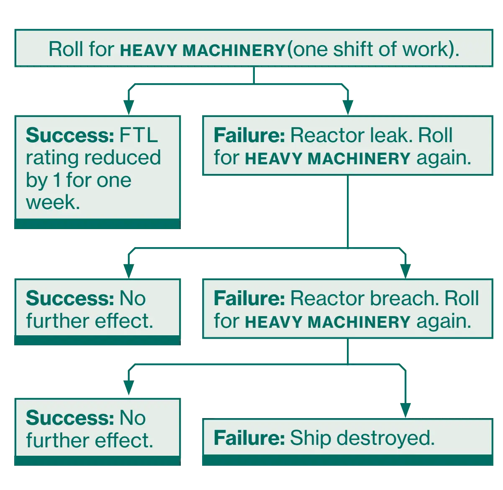
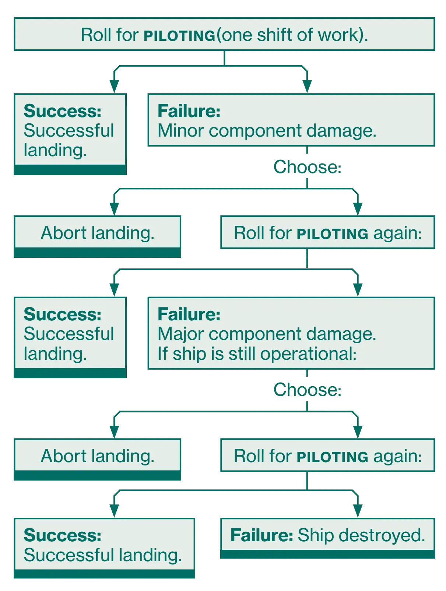
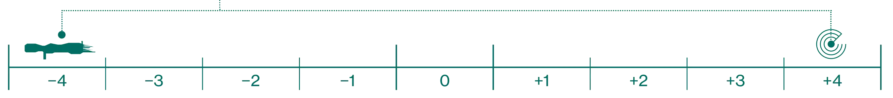
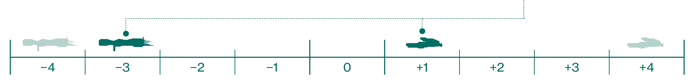
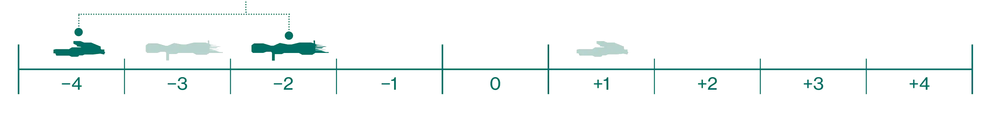

<!DOCTYPE html>
<html lang="en">

<head>
    <meta charset="UTF-8">
    <meta name="viewport" content="width=device-width, initial-scale=1.0">
    <title>6. A Hard Life Amongst The Stars</title>
    <link rel="stylesheet" href="./styles/alienrpg.css">
    <link rel="stylesheet" href="./../../styles/alien-rpg.css">
    <style>
        body {
            max-width: 900px;
            margin: 2em auto;
            padding: 2em;
            background: #0d1f13;
            color: #e0e0e0;
        }
    </style>
</head>

<body>

    <!-- ========================================== -->
    <!-- EDIT BELOW THIS LINE -->
    <!-- ========================================== -->

    <div class="alien-content">

        <!-- Chapter Start - Hero Box (use at beginning of chapters) -->
        <div class="alien-chapter-start">
            <div class="alien-chapter-number">Chapter 6</div>
            <h1 class="alien-chapter-title">
                A Hard Life<br />
                Amongst<br />
                The Stars
            </h1>
            <div class="alien-chapter-quote">
                "There are other worlds than this one, and if there is no air to breathe,
                we will simply have to make it."
            </div>
            <div class="alien-chapter-footer">Peter Weyland</div>
        </div>

        <!-- Regular Content -->
        <p><strong>LIVING IN SPACE AIN’T PRETTY</strong>. Human life is cheap and
            so are paychecks. There is always someone worse off,
            willing to do your job for even less, so you better not screw
            up. In most professions, having dirt on your employer or
            becoming an expert in a field are the only ways to maintain
            any semblance of job security.</p>
        <p class="alien-indent-paragraph">Aside from the luxury accommodations of the corporate
            elite, almost everything is grimy, used, and in need of repair.</p>
        <p class="alien-indent-paragraph">In remote sectors, imported technologies are overpriced
            and hard to come by, so most equipment is jury-rigged,
            modified, and made from recycled and refurbished
            materials. In some territories, vehicles and starships are
            still in use that are nearly a century old.</p>
        <p class="alien-indent-paragraph">Instead of the expensive, three dimensional holographic
            displays of yesteryear, most spacecraft are equipped with
            conventional monitors and basic sensor packages. Over
            the past several decades, MU/TH/UR computer systems
            have become less about the sophistication of the AI and
            more focused on utilitarian function. Even spacesuits are
            bulkier and provide less protection than those produced
            during the golden years.</p>
        <p class="alien-indent-paragraph">In essence, humankind as a technological society is on
            the decline.</p>
        <p class="alien-indent-paragraph">Humanity never would have left the cradle of our solar
            system without the foresight of visionary entrepreneur and
            businessman Peter Weyland. Under his stewardship, the
            Weyland Corporation introduced three things that ensured
            humanity’s dominance over the stars – the capacity to
            travel at faster than light speeds, the introduction of the
            hypersleep chamber, and the ability to terraform whole
            worlds.</p>

        <h1>Space Travel</h1>
        <p><strong>THE ABILITY TO TRAVEL</strong> faster than light is the lynchpin
            of humanity’s expansion outside our own solar system.
            Without it, there would be no extrasolar colonies and no
            corporate star empires.</p>
        <p>
        <h3>Faster Than The Speed Of Light:</h3> First developed by
        Weyland Corp in the 2030s, these engines are sometimes
        referred to as displacement drives. The system works on
        the principle of an inverse relationship between velocity
        and the flow of time. An FTL drive achieves these speeds
        by displacing the volume of space preceding a spacecraft
        and drawing the vessel forward with it. Accelerating to
        faster than light speeds is not instantaneous. Ion thrusters
        build speed up to the point where the displacement drive
        can take over, gradually propelling starships to several
        times the speed of light.</p>
        <p class="alien-indent-paragraph">When they were first deployed 150 years ago, FTL
            engines could impel a starship such as a Heliades class
            Space Exploration Vehicle at 10 to 15 times the speed of
            light. Even though modern ships can travel from 50 to
            upwards of 700 times FTL, that still means it can take
            weeks or even years to travel the whole of charted space.</p>
        <p class="alien-indent-paragraph">To complicate matters, prolonged travel at faster than
            light speeds can cause a syndrome in mammals known as
            Neurological Distortion Disorder – or NDDs for short (next
            page). To combat this and to conserve resources on long
            trips, space travelers spend most of their FTL time in stasis.</p>

        <h2>Tripping The Light Fantastic</h2>
        <p>Every craft capable of FTL speed has an FTL rating (page
            122) that denotes how many days it takes for the ship to
            traverse one parsec on the star map. A lower number means
            a faster ship. Presently, no existing ship has an FTL rating
            lower than 1. To calculate your journey, multiply the number
            of days per parsec by the number of parsecs. For example: If
            you have an FTL drive with a rating of 6 and you are traveling
            9 parsecs, you wind up with a trip that takes 54 days.</p>
        <p>
        <h3>Overcharging Engines:</h3> Need to get somewhere in a
        hurry? Your engineer might be able to coax more speed out
        of your engines. Of course, the reactor might start leaking
        radiation everywhere and explode, but risk is the name of
        the game, now, isn’t it?</p>
        <p class="alien-indent-paragraph">To do this, the engineer makes a <span class="alien-code">HEAVY
                MACHINERY</span> roll (one
            shift of work). If successful, the ship’s FTL rating is decreased
            by 1 step for one week (from 6 to 5 for example). If the roll fails,
            the ship instead suffers a reactor leak (see minor component
            damage, page 145), and the engineer must make another
            immediate <span class="alien-code">HEAVY MACHINERY</span> roll. If this also fails, the ship suffers a
            reactor breach (major component
            damage,
            page 146), and the engineer must make a third <span class="alien-code">HEAVY
                MACHINERY</span> roll. If the third roll also fails, the reactor explodes,
            destroying the ship and killing all on board. An engineer may
            only attempt to overcharge the engines once per week.</p>

        <div class="alien-info-box-tab">
            <div class="alien-info-box-tab-header">Overcharging Engines</div>
            
        </div>

        <h2>Planetfall</h2>
        <p>Ships built for atmospheric entry and planetary surface
            landings (with the Planetfall Capacity upgrade) can be used
            to land on any rock in space you like – but expect it to be
            a bumpy ride. Planetfall usually takes about one shift to
            complete, and requires a <span class="alien-code">PILOTING</span> roll. If the roll fails, the
            ship suffers minor component damage (roll D66 on the
            table on page 145).</p>
        <p class="alien-indent-paragraph">You can now choose to abort the landing and try again
            next shift. If you continue, roll for <span class="alien-code">PILOTING</span> again. If the
            second roll fails too, the ship suffers major component
            damage (roll 2D6 on the table on page 146). If you suffer
            engine failure or a reactor breach, the ship will crash – hurry
            to those EEVs! If the ship is still operable, you again have
            the choice to abort or to continue the landing, making a
            third <span class="alien-code">PILOTING</span> roll. If this third roll also fails, the ship crashes
            hard, killing all on board.</p>

        <div class="alien-info-box-tab">
            <div class="alien-info-box-tab-header">Planetfall</div>
            
        </div>

        <h2>Hyper Sleeping With The Stars</h2>
        <p>Even before FTL was possible, hypersleep technology was
            in development. As early as the 2020s, Peter Weyland
            had ordered his scientists to find a way to extend life
            indefinitely. While not exactly what Weyland had in mind,
            the resulting technology was a significant leap forward.
            The ability to slow a life-form’s biological processes to a
            near standstill was beneficial to both the medical industry
            and deep space missions at sublight speeds. When FTL
            became a reality, stasis was adapted as a solution to
            resource management on space flights.</p>
        <p class="alien-indent-paragraph">Hypersleep was soon found to offer other benefits to
            humans’ health in space. Traveling faster than the speed
            of light can have a distortion effect on human perception.
            Known as Neurological Distortion Disorder, this syndrome
            causes paranoia, epilepsy, psychotic behavior and other
            adverse effects (see the adjacent sidebar). Worse than
            that, the faster one travels, the worse the symptoms. Stasis
            protects space travelers from the NDDs, with the added
            benefit of arresting aging on a cellular level.</p>

        <div class="alien-info-box-tab">
            <div class="alien-info-box-tab-header">Neurological Distortion Disorder</div>
            <p>If you are awake during FTL travel, roll a D6 after
                each time period (in days) equal to the FTL rating
                of the ship (page 122) and check the table below.
                Add +1 cumulatively to each roll after the first.</p>
            <table class="alien-table">
                <thead>
                    <tr>
                        <th style="min-width: 50px;">Roll</th>
                        <th>Effect</th>
                    </tr>
                </thead>
                <tbody>
                    <tr>
                        <td>1-5</td>
                        <td>
                            <p><strong>No Effect.</strong> Yet.</p>
                        </td>
                    </tr>
                    <tr>
                        <td>6-7</td>
                        <td>
                            <p><strong>Paranoia.</strong> You become convinced that
                                someone or something on board the ship
                                is out to get you. The effect lasts until the
                                FTL travel ends.</p>
                        </td>
                    </tr>
                    <tr>
                        <td>8-9</td>
                        <td>
                            <p><strong>Epilepsy.</strong> You suffer episodes of epileptic
                                seizures that will disable you for a stretch
                                of time. Roll a stress die each shift – a
                                <span class="alien-dice-stress-failure"></span> means a seizure occurs.
                            </p>
                        </td>
                    </tr>
                    <tr>
                        <td>10-11</td>
                        <td>
                            <p><strong>Dementia.</strong> Your memory is a blank slate.
                                You can no longer recall who you or the
                                other characters are. The effect lasts for
                                D6 days after the FTL travel ends.</p>
                        </td>
                    </tr>
                    <tr>
                        <td>12+</td>
                        <td>
                            <p><strong>Psychosis.</strong> You must immediately attack
                                the nearest person or creature, friendly
                                or not. You won’t stop until you or the
                                target is broken. Every friendly PC who
                                witnesses your rampage must make an
                                immediate panic roll.</p>
                        </td>
                    </tr>
                </tbody>
            </table>
        </div>

        <div class="alien-info-box-top-border">
            <div class="alien-info-box-title">Hypersleep Effects</div>
            <p>Hypersleep gives full protection against NDD, but
                being abruptly awakened is dangerous. Disori-
                entation, headaches, chest pain, and nausea are
                all common side effects. While uncommon, some
                severe cases have resulted in death.</p>
            <p class="alien-indent-paragraph">A rude awakening from hypersleep counts as
                an attack against you rolled with six base dice
                (base damage 1). Armor has no effect. In addition,
                spending any length of time in hypersleep will make
                you fatigued (page 75). The effect can also be
                counteracted by the Hydr8tion drug (page 98).</p>
        </div>

        <p>
        <h3>The Sleep Of Ages:</h3> The process of entering hypersleep
        involves a mixture of gasses and lowering the body
        temperature significantly. While travelers are not conscious
        when in stasis, they can dream. As brain functions are
        also slowed during hypersleep, a single dream can last
        months. In fact, an entire industry has been created to take
        advantage of this (page 118). Dreaming in hypersleep
        promotes mental health and can help a body’s natural
        regenerative healing.</p>
        <h2>Gravity Drives</h2>
        <p>Corporate scientists are always working on advances
            in FTL technology. A recent development operates by
            generating waves of force throughout the length of the
            vessel which propel it past light speed without the aid
            of thrusters. Called gravity drives, these systems create
            a distortion in space-time, allowing starships to enter
            Einsteinian Space – a relative state of non-existence in
            the material universe, allowing ships to travel much faster
            than conventional FTL.</p>
        <p class="alien-indent-paragraph">The technology is a giant leap forward, but the NDDs
            still require travelers to enter stasis for prolonged journeys.
            The details of this process and the principles behind it are
            currently classified by Weyland-Yutani. Still in experimental
            trials, gravity drives are mostly unknown on the Frontier,
            found only on high-end company yachts and exploration
            ships from the Core Systems.</p>
        <p class="alien-indent-paragraph">A fortuitous byproduct of the gravity drive is that the
            fields generated by it provide powerful protection against
            ballistic and energy attacks. Gravity drives are finely
            calibrated and weight sensitive – any unaccounted for
            mass aboard a starship utilizing the system risks severe
            course deviations.</p>

        <h1>Charted Space</h1>
        <p>WELCOME TO SPACE. You’re going to die here – and when
            that happens, your relatives are going to need to know
            where to pick up your body and whether to burn it or shoot
            it back into the void.</p>
        <p class="alien-indent-paragraph">The star map on the inside front covers of this book
            shows all of charted space. The three largest sections
            divided by government are the American Arm of the
            United Americas (UA), the Anglo-Japanese Arm of the
            Three World Empire (3WE), and the collectivist block of
            the Union of Progressive Peoples (UPP). These national
            domains cut through the Core, Outer Veil, Outer Rim, and
            Far Reach of known space.</p>
        <p class="alien-indent-paragraph">The Core Systems are those closest to Earth. They are
            the most prosperous colonies and the playground of the
            elite. The 3WE and the Independent Core System Colonies
            (ICSC) dominate this region of space.</p>
        <p>
        <h3>The Outer Veil:</h3> Outside the core systems is the Outer
        Veil. Rich in resources for mining and cultivation, the
        colonies of the Outer Veil were terraformed and settled
        by the 3WE over a century ago. Since then the UPP has
        annexed many worlds here. Vast regions of space in this
        region have been stripped bare and made uninhabitable
        through unsafe mining methods.</p>
        <p>
        <h3>The Outer Rim:</h3> Beyond the Outer Veil is the Outer Rim.
        Out here American and UPP explorers discovered several
        resource rich planets that could support human life without
        terraforming. The Rim is the outer edge of civilized space.</p>
        <p>
        <h3>The Far Reach:</h3> Extending from the American Arm of
        the Outer Rim is the Far Reach. This area of claimed but
        mostly uncharted space stretches through vast areas of
        the unknown to a scattered group of terraformed lifeblood
        colonies essential to the UA and 3WE. Space truckers call
        this string of worlds the Pearl Necklace.</p>
        <p>
        <h3>The Frontier:</h3> Along the edge of explored space lies the
        Frontier. It is a free-for-all land of opportunity constantly
        expanding the boundaries of known space. Beyond that
        lies darkness. </p>

        <div class="alien-h1-quote">
            "We didn't leave Earth to be safe."
        </div>
        <div class="alien-h1-quote-author">Tennesse</div>

        <h1>Living In Space</h1>

        <p><strong>SO, YOU WANT</strong> to try your hand at surviving on the Frontier.
            The average blue-collar worker here is a farmer, a pioneer,
            a maintenance engineer, a wildcatter, a prospector, a miner,
            a space trucker, a marshal, a manager or a soldier – all dirty
            and hard-working professions. Only a select few get to call
            themselves explorers.</p>
        <p class="alien-indent-paragraph">The best long-term option available to the common human
            is to become a Frontier colonist. The vetting process isn’t
            easy – in addition to competency and physical prerequisites,
            candidates must endure an intense psychological screening
            process that many potential colonists fail. However, once
            you are approved for a colony, you are essentially set up in
            that position for life, assuming you don’t screw up royally.
            Corporations and the colonial administration can’t be bothered
            to replace a farmsteader or terraforming maintenance
            engineer like you for minor infractions. Also, the job has the
            added bonus of your descendants inheriting your position.</p>
        <p class="alien-indent-paragraph">Unfortunately, there is no glory or glamour to be had as
            a colonist – the colonies on the Frontier are experiencing
            an economic depression while the companies in the Core
            Systems grow fat off the hard labor of others. Supplies
            are limited and more often than not, colonists are told to
            ration and improvise.</p>
        <h2>Just In Town For Supplies</h2>
        <p>While most Frontier jobs are colony-based, they all interact
            in one way or another. Prospectors and wildcatters survey
            the terrain, staking claims to mineral deposits and drilling
            exploratory wells in unexplored regions. Miners often
            serve a one-year contract at a particular colony site before
            being rotated out. Farmers grow produce, maintenance
            engineers keep the atmospheric processors running,
            general managers oversee it all, and the marshals keep
            everyone in line. Space truckers deliver supplies to the
            colony and bring that world’s exports back to the Inner
            Core Systems. Many corporate cargo haulers are former
            Colonial Navy veterans who are down on their luck. The
            Colonial Marines and Navy protect these worlds, also
            rotating in and out along the Frontier. Finally, corporations
            will send security and assessment teams to ensure their
            resources are being well cared for. Taken all together, it
            represents the well-oiled machine of commerce – and
            everyone in it is just a cog, a replaceable cog.</p>
        <p class="alien-indent-paragraph">Then there is the fringe element.</p>
        <p class="alien-indent-paragraph">Mercenaries, vagabonds and privateers move from
            colony to colony, looking to eke out a living on the fringe
            of normal society. Some are criminals on the run, others are
            just disenchanted with colonial and corporate bureaucracy.
            Many are dangerous.</p>

        <h2>Spaceships</h2>
        <p>Between scouting missions and cargo runs, people on the
            Frontier spend a lot of time in massive metal cans hurtling
            through space. Starships are designed for functionality,
            not aesthetics. Floor gratings can be removed to access
            conduits located beneath them, and exposed machinery
            and tubing line the walls in all but the crew’s quarters.
            Several typical spaceships operating in the 2180s AD are
            described on page 128 and forward.</p>
        <p>
        <h3>A Lonely Life:</h3> Living on spaceships can mean sleeping
        for months at a time. To complicate matters, all this travel
        back and forth can severely alter personal dynamics. When
        you spend a few years making cargo runs in hypersleep you
        don’t age all that much, while your family has been living
        active lives planetside. Children grow up and lovers grow
        older. Relationships tend to unravel, leaving you with only
        your work and your crew.</p>
        <h2>Space Stations</h2>
        <p>Space stations are mostly designed in a similar fashion
            to spacecraft – the difference being that there are many
            more habitat areas, as well as large open malls. Station
            design is as varied as that of starcraft – some consist of
            several towers with a connecting latticework of travel
            tubes while others are built out into the spires of massive
            decommissioned refinery modules. Still more utilize more
            traditional forms such as a wheel or sphere.</p>
        <p class="alien-indent-paragraph">While most are built out of titanium composite and
            other high-end alloys, some, such as the religious colony
            Arceon, are also composed of exotic materials. Most space
            stations are like overpopulated cities in space – quarters
            are cramped for all but the elite, those in the working class
            live and work right on top of one another, and crime runs
            rampant.</p>
        <p>
        <h3>Claustrophobia In The Void:</h3> People need room to
        breathe. Space itself might be vast, but there just isn’t a
        whole lot of it available in the stations floating amongst
        the stars. As windows are a commodity in space, space
        stations often have recreation centers and botanical
        gardens equipped with environmental walls. These large
        monitors project breathtaking views of natural vistas
        such as wooded glades, tropical beaches, or majestic
        mountain ranges. While expensive models include a three-
        dimensional projection, cheaper and more prolific models
        use flat-screen video.</p>

        <div class="alien-example-box-with-header">
            <div class="alien-example-box-header-row">
                <div class="alien-example-box-label">Station Data</div>
                <div class="alien-example-box-headline">Anchorpoint Station</div>
            </div>
            <div class="alien-example-box-content">
                <p>The second space station to bear the name, the
                    massive Anchorpoint station is your crossroads to
                    the Frontier. Located in unclaimed space a few scant
                    parsecs from UAAC base Liberty Echo, Anchorpoint
                    is a convenient place to pick up supplies, get some
                    grub, refuel, make repairs in drydock, and pick up
                    migrant crew and workers for your next job. Loca-
                    tion is everything, and Anchorpoint is positioned
                    perfectly to service the southern Outer Rim and the
                    Far Reach, providing an alternate route from the
                    Solomons to civilized space.</p>
                <p class="alien-indent-paragraph">Anchorpoint is considered neutral territory and
                    is governed by the ICSC – vessels from any and all
                    governments and corporations are welcome here.
                    The ICC and Colonial Administration often send
                    representatives to negotiate intercolonial disputes
                    at Anchorpoint. The UA operates a Colonial
                    Marshal Bureau aboard, and a small contingent of
                    Colonial Marines is stationed in the garrison office
                    in tower four.</p>
                <p class="alien-indent-paragraph">The station has a very small permanent popu-
                    lation, but can easily house over 3,000 transient
                    workers and colonists. Anchorpoint is composed of
                    four refinery modules situated around a central core
                    hub. Three of the modules have been converted to
                    habitable space similar to the Seegson company’s
                    former Sevastopol station, while the fourth is a
                    functioning refinery for processing ores and gasses
                    bound for the Frontier colonies. With concourses
                    laid out similar to a terrestrial spaceport, the station
                    is known for its dive bars, open mall areas, service
                    androids, and inexpensive entertainment.</p>

                <div class="alien-info-box-inverted">
                    <div class="alien-info-box-title">What’s The Story Mother?</div>
                    <p>While only three years old, the newest incar-
                        nation of Anchorpoint is the most successful
                        space station project outside of the Sol
                        system. The original Anchorpoint was a colo-
                        nial refueling hub/science station situated
                        in the Neroid Sector, close to UPP space.
                        In 2179 she suffered a catastrophic reactor
                        failure – for reasons unknown. Colonial
                        Administration and the ICC commissioned
                        the Independent Core System Colonies to
                        build a new one, placing it further out on the
                        Frontier to facilitate the colonization boom.</p>
                </div>
            </div>
        </div>

        <div class="alien-example-box-with-header">
            <div class="alien-example-box-header-row">
                <div class="alien-example-box-label">Station Data</div>
                <div class="alien-example-box-headline">Arceon</div>
            </div>
            <div class="alien-example-box-content">
                <p>Dubbed “the wooden planet” by space truckers, Arceon
                    is a strange station. Originally an old class V habitation
                    sphere, the mile-wide Arceon was repurposed as a
                    monastery for a reclusive technophobic monastic order.
                    All metallic areas within and without were covered
                    with wood, and all structures within the sphere – an
                    abbey, libraries, communal baths, reservoirs, and even a
                    massive glassworks – are wooden and archaic in nature.</p>
                <p class="alien-indent-paragraph">Inside, there are open spaces with ceilings as high
                    as 100 meters tall, and the structure itself is layered like
                    an ant’s nest. Arceon sports grass fields where crops
                    and livestock are grown and maintained. It is large
                    enough and rotates fast enough to maintain its own
                    thin atmosphere which is continuously processed and
                    replenished by technology located at the core of the
                    wooden world. The upper hemisphere of the station is
                    dominated by a massive lake, replete with marine life.</p>

                <div class="alien-info-box-inverted">
                    <div class="alien-info-box-title">What’s The Story Mother?</div>
                    <p>Arceon was founded by a monastic “back to
                        nature” movement in the 2100s. While initially
                        dismissed as a cult, the order proved to be
                        dangerous when they used the enhanced
                        computer virus called New Plague to wipe out
                        an inordinate amount of data on Earth, crippling
                        credit unions and trans-stellar corporations
                        alike. The group even detonated low yield
                        nukes in key metropolitan sectors, utilizing the
                        electromagnetic pulse to force people to get by
                        without technology.</p>
                    <p class="alien-indent-paragraph">As more and more followers flocked to
                        the order, action was taken. Rounded up and
                        arrested by a joint 3WE and UA task force, the
                        order’s final sentencing was suspended when
                        Weyland Corp bought off the judges. The monks
                        were ultimately released into the conscripted
                        custody of Weyland-Yutani, who relocated them
                        to Arceon in exchange for the employment of
                        their leader, Saint Tomas – the computer genius
                        behind the New Plague.</p>
                    <p class="alien-indent-paragraph">On Arceon, the group is led by an Abbot. Also,
                        an older model android called Brother Anthony
                        resides with them to keep them from rising again.
                        W-Y ships stopped running supplies to Arceon
                        after Tomas died decades ago, and the monks
                        have very few actual visitors. Their crops and
                        livestock sustain them as they live the simple life.</p>
                </div>
            </div>
        </div>

        <h2>Deep Space Colonies</h2>
        <p>The concept of the colonies that was sold to the general
            public was one of an off-world paradise. While some planets
            did eventually become just that, they are the product of the
            blood, sweat, and tears of generations of colonists.</p>
        <p>
        <h3>Terraforming:</h3> Terraforming began at home in the 2010s,
        repairing the Earth’s ecosystem from the ravages of war
        and pollution. The next step was the Moon, where localized
        areas were pressurized and transformed. Mars soon
        followed. While global warming was arrested as soon as
        the processors took effect, it still took decades to make
        the Earth whole again. In a move to acclimate people to the
        idea of life amongst the stars, Sir Peter Weyland offered
        incentives to move off-world and colonize the solar system
        while the Earth healed.</p>
        <p class="alien-indent-paragraph">The strategy was successful, and soon colonies were
            popping up as far away as Saturn. Within a decade of the
            inception of the FTL drive, Weyland Corp had set up an
            Atmospheric Processing Plant (APP) on an extrasolar
            world, and it wasn’t long before people were eager to
            colonize there as well. In the 21st century, terraforming
            helped humanity to settle the stars. The costly process was
            exacting and only performed on planets that had near earth
            conditions, thus prompting the planet to help sustain itself
            once the expensive terraforming was complete.</p>
        <p class="alien-indent-paragraph">When the Yutani Corporation merged with Weyland
            Corp at the start of the 22nd century, terraforming
            was deemed unprofitable and put to rest. Instead, W-Y
            astronomers searched the heavens for planets that could
            support human life on their own. Colony missions like the
            Affiance and the ill-fated Covenant were sent off to start
            life on newly discovered Earth-like planets.</p>
        <p class="alien-indent-paragraph">Without the enormous economic strain that the Weyland
            Corporation had endured in their efforts to transform entire
            worlds, Weyland-Yutani prospered. The new model wouldn’t
            last. As more and more people relocated to the existing
            off-world colonies, populations on these worlds soared and
            resources again diminished. Soon, the supply of habitable
            worlds was outweighed by demand.</p>
        <p>
        <h3>Building Better Worlds:</h3> Over the next fifty years,
        more and more resources were found on barren worlds
        along the shifting Frontier, prompting Weyland-Yutani to
        resurrect terraforming and create a new fast and dirty form
        of atmospheric processing. Recycling a hundred-year-old
        ad campaign, Weyland-Yutani again boasted they were
        “building better worlds.” The claim was and still is debatable.</p>
        <p class="alien-indent-paragraph">Colloquially called a “Shake and Bake” colony, an
            Atmospheric Processor (AP) is introduced to a planet or
            moon to scrub its atmosphere without the safety standards
            of the original Weyland APPs. Essentially giant fusion
            reactors, these completely automated W-Y APs still require
            constant monitoring and maintenance, and colonies are
            often set up on worlds for the sole purpose of servicing
            them. Weyland-Yutani has deployed APPs across the
            Frontier, creating colonies on any world that might have
            exploitable resources.</p>
        <p class="alien-indent-paragraph">Terraforming can be a misnomer. It can take decades
            to transform a planet’s ecology, and it doesn’t always hold.
            Most of the worlds undergoing the process will never
            become Earth-like. They are barren, desolate, and alien
            places that the processors can only alter enough for man
            to survive on without a pressure suit. Some of these worlds
            even require APs to constantly run in order to maintain a
            suitable atmosphere, making the processor a prime target
            for enemy powers and insurgents.</p>
        <p class="alien-indent-paragraph">Some planets or planetoids that are rich in mineral
            resources are simply unable to even begin to support
            the terraforming process. In those cases, pressurized
            facilities are built on the surface to house laborers and their
            families. Because of this, colonies can be built in nearly
            any environment. Ocean, jungle, desert, arctic, and barren
            worlds are all common.</p>

        <h2>Living Quarters</h2>
        <p>In space, no one can hear you snore… in hypersleep, at
            least. When not in stasis, however, you need a place to bed
            down and call your own. Here are your options.</p>
        <p>
        <h3>On Rotation:</h3> As a mining and construction worker, you
        are often on rotation, and therefore do not rate for full
        quarters. Instead, you bunk in communal sleeping areas
        called cages. These facilities have stacked levels of
        meshed enclosures just long enough for a bedroll and tall
        enough to sit up in. A small locker and personal effects area
        is built into the headboard, and privacy is accomplished
        through the use of blinds. Just as on starships, showers
        and toilet facilities are shared.</p>
        <p>
        <h3>Long Hauls:</h3> On military and commercial starship runs,
        most of your sleep time is done in stasis pods. For personal
        time while traveling in-system, many freighters have a
        common area with recessed bunks built into the walls. Like
        the cages, these accommodations can be closed off with
        blinds or curtains, and can be decorated according to your
        discerning tastes (or lack thereof). Showers, the bathroom,
        galley and mess area are all communal on these service
        ships, so the coffin-like bunks offer the only private place
        for most military and long-haul crews.</p>
        <p>
        <h3>Cramped Quarters:</h3> On some space stations,
        populations are high, and space is optimized. Don’t expect
        to get too comfortable in such places. The lower levels of
        stations like Gateway have tight hallways and cramped
        studio apartments with kitchenettes and bathroom facilities
        all in the same small area. These apartments can be so
        small that it is uncomfortable for two people to navigate
        one at the same time.</p>
        <p>
        <h3>Galaxy Standard:</h3> Crew quarters on colony and scientific
        exploration ships are often more roomy, consisting of a
        standardized studio area with a small private bathroom.
        If you’re skilled enough, you might even rate your own
        viewport.</p>
        <p>
        <h3>Luxury Accommodations:</h3> Don’t expect to spend much
        time in any of these. Lavish to the extreme, these penthouse
        apartments on starships and stations are sometimes
        located on a separate module with its own support system
        and supplies. They are spacious, extravagantly stocked
        with food, drink, and whatever its occupants might need
        to survive for up to two years on their own.</p>

        <h2>Function Before Fashion</h2>
        <p>On the Frontier, you dress for success, and here that means
            practical. Clothing is usually overalls, jumpsuits, leather
            gloves, bomber jackets, and ball caps, all in muted colors
            and often decorated with colorful patches and corporate
            logos. On colder worlds, colonists and explorers wear dark,
            layered parkas and form-fitting leather aviator helmets or
            fur-lined, billed hats with ear flaps.</p>
        <p class="alien-indent-paragraph">Marshals generally wear blue, gray, or tan utilitarian
            uniforms, and military personnel of course dress in
            khakis and olive drab. Company reps often wear suits in
            inappropriate places, distinguishing themselves from the
            blue-collar workers. Corporate fashion includes dark gray,
            navy, and black with white shirts and upturned collars along
            with skinny ties. On planetoids with nebulous atmospheres,
            compression suits are worn, ranging from cumbersome
            padded models to the sleeker, more advanced corporate
            spacesuits.</p>

        <div class="alien-info-box-tab">
            <div class="alien-info-box-tab-header">Living Expenses</div>
            <p>Nothing is for free on the Frontier, not even
                breathing. The adjacent chart shows typical living
                expenses, depending on your taste for luxury and
                what you can afford.</p>
            <table class="alien-table">
                <thead>
                    <tr>
                        <th>Weekly Cost</th>
                        <th>Living Standard</th>
                    </tr>
                </thead>
                <tbody>
                    <tr>
                        <td>$25</td>
                        <td>Minimum</td>
                    </tr>
                    <tr>
                        <td>$100</td>
                        <td>Basic</td>
                    </tr>
                    <tr>
                        <td>$300</td>
                        <td>Normal</td>
                    </tr>
                    <tr>
                        <td>$2,000</td>
                        <td>Luxurious</td>
                    </tr>
                </tbody>
            </table>
        </div>

        <h2>Money And Identification, Please</h2>
        <p>Just whose money are you spending, anyway? Identification
            and credit accounts are linked in the colonies, and can
            be accessed in a variety of ways. Most colonists carry a
            metal and transparent plastic prism ID account card that
            is encoded to the owner’s thumbprint – debits only occur
            when the proper recipient is holding the card. Other forms
            of ID in the colonies include access codes, retina scans,
            genetic breath analyzers, plastic or metal barcoded dog
            tags, and barcode tattoos – although the latter are usually
            reserved for convicted criminals.</p>
        <p>
        <h3>Cold Cash:</h3> Credit accounts constitute the majority of
        transactions throughout the territories, but life on the
        Frontier can be different. What if you want to make a
        private purchase? Often, a transaction without a record
        is favorable. Most accepted cash is in denominations
        set by particular corporations, and their worth goes up
        and down based on the value of company stock. This
        can lead to problems when a particular business only
        accepts specific forms of currency. Rather than bank
        notes, these are corporate notes. National currencies
        are usually in electronic credit accounts only, as most
        governments prefer to keep track of all their citizens’
        transactions. However, as the United Americas has
        grown disenchanted with their reliance on corporations
        like Weyland-Yutani and Lasalle Bionational, the Federal
        Reserve has proposed resurrecting the United American
        Dollar as paper currency.</p>
        <p>
        <h3>Currencies:</h3> All debits and credits are measured in, and
        converted to, United American (UA) dollars, Three World
        Imperial (3WE) yen, or Union of Progressive Peoples (UPP)
        yuan. Bills are available in different denominations, such
        as 5, 10, 20, 100, 1,000, and 10,000 – there are no singles.
        Some corporate paper currencies include:</p>

        <ul class="alien-chevron-list">
            <li><strong>W-Y COLONY DOLLARS:</strong> (Pronounced Why) Weyland-
                Yutani currency – the hundred W-Y dollar bill has a
                security hologram imprint of Peter Weyland on its face.
                Other bills depict company pioneers such as Meredith
                Vickers, and both Jenny and Hideo Yutani.</li>
            <li><strong>SEEG BILLS:</strong> Not as widely accepted as W-Y dollars,
                these bills bear only the Seegson logo and a holographic
                denomination.</li>
            <li><strong>BINAT COINS:</strong> These tokens are made of a mixture
                of standard and precious metals, ranging from steel,
                copper, and platinum to even rarer earth metals.</li>
        </ul>

        <p>Conversion rates are always in flux, but as a rule of thumb,
            W-Y dollars maintain their value, and thus are the most
            sought after.</p>

        <h2>Work For Hire</h2>
        <p>Let’s face it – you are out here for the paycheck and
            not much else. In the adjacent table are some typical
            salaries on the Frontier. Base salaries are low because
            corporations don’t want you to own anything – they want
            to own you. Corporate credit and loans are also available.
            Frontier employee compensation packages also include
            living quarters, standard rations, bonuses, shares, claims,
            and medical benefits. But brush your teeth, because no-
            one includes dental. Ever.</p>
        <h2>Communications On The Frontier</h2>
        <p>Interstellar space is vast. Transmissions are not instanta-
            neous, sometimes taking weeks or months to reach the
            recipient. Fortunately, Weyland-Yutani has built a sophisti-
            cated communication satellite grid surrounding most inhab-
            ited sectors of space. Known as the Network, all signals are
            routed through it, sometimes bouncing between thousands
            of comm arrays before reaching their destination.</p>
        <p class="alien-indent-paragraph">Intrasystem communications are much more immediate,
            ranging from real time to a short lag, depending on how far
            out one is from the recipient.</p>
        <p class="alien-indent-paragraph">Massive antenna arrays and satellite dishes dominate
            spacecraft, stations, and ground facilities, and a viable
            hard-wired uplink to them is necessary for transmissions
            of any kind. Both interstellar and intrasystem long distance
            personal calls can be extremely expensive, and if there are
            few comm facilities available or there is high comm traffic
            across the Network, you can find yourself waiting days
            before you receive authorized time for that critical call.</p>
        <p class="alien-indent-paragraph">As it can take extended periods for a reply, most colonial
            general managers, marshals, and military commanders
            are forced to make decisions based on their personal
            interpretation of policy without the approval of the company
            or Colonial Administration. As life out on the ass-end of
            space can take its toll on the psyche, this sometimes leads
            to bizarre extrapolations of laws and procedures.</p>
        <p>
        <h3>Lost In Transmission:</h3> No one can hear you scream,
        but you can hear a star sing. Space is also noisy.
        Pulsars, black holes, and other stellar phenomena all
        produce transmissions on a wide variety of frequencies.
        Communication buffers weed out these errant signals, but
        because of this, legitimate transmissions with weak signals
        can sometimes be lost in the mix.</p>
        <p class="alien-indent-paragraph">Intrasystem call cards are tied directly to a specific
            recipient. These cards provide you with a direct line to your
            loved ones – Network and distance permitting. Often used
            as business cards by corporate reps, these transparent
            prism plastic cards will automatically connect to the rep’s
            receiver when inserted into a comm terminal. The charge
            is usually billed to the company.</p>

        <div class="alien-info-box-tab">
            <div class="alien-info-box-tab-header">Salaries</div>
            <table class="alien-table">
                <thead>
                    <tr>
                        <th>Occupation</th>
                        <th>Weekly Salary</th>
                        <th>Examples</th>
                    </tr>
                </thead>
                <tbody>
                    <tr>
                        <td>Colonial labor</td>
                        <td>$500–$640</td>
                        <td>Miners, prospectors, farmers, drivers, mechanics, and service personnel</td>
                    </tr>
                    <tr>
                        <td>Commercial employees</td>
                        <td>$400–$960</td>
                        <td>Space truckers, officers, technicians, cargo handlers, pilots, navigators, medical and
                            science officers</td>
                    </tr>
                    <tr>
                        <td>Corporate and government officials</td>
                        <td>$540–$1,200</td>
                        <td>Administration, execs, secretaries, sales persons, auditors, hitmen, and agents</td>
                    </tr>
                    <tr>
                        <td>Law enforcement</td>
                        <td>$400–$700</td>
                        <td>Colonial Marshals, federal investigators, colonial guard and security</td>
                    </tr>
                    <tr>
                        <td>Military officers and enlisted personnel</td>
                        <td>$500–$760</td>
                        <td>All Army, Marines, and Navy roles</td>
                    </tr>
                    <tr>
                        <td>Elite occupations</td>
                        <td>$1,300–$20,000</td>
                        <td>CEOs, entertainment professionals, dreamers, scientists, doctors, elite assassins, governors
                            and high-ranking military</td>
                    </tr>
                </tbody>
            </table>
        </div>

        <h2>Media</h2>
        <p>There is no such thing as the free press on the Frontier.
            Most journalists are corporate-owned, and the few that
            aren’t are either spin doctors for their government or just
            haven’t been bought off yet. Propaganda is the norm as each
            company decides what news to broadcast. Colony-based
            signals broadcast local news. Due to transmission times,
            Network broadcast Interstellar News is often weeks out of
            date, so most colonies have stopped tuning in – something
            that could be potentially catastrophic if an enemy or alien
            threat were to make its way along the frontier.</p>
        <h2>Entertainment</h2>
        <p>Just like in every age before, 22nd century people are easily
            bored. On the Frontier, that boredom is remedied through
            music, drink, and recreational drugs (page 99) prescribed
            by company physicians. On the music scene, classic rock and
            country have seen a resurgence along the outer colonies.
            Recordings are downloaded from the Network and copied
            onto disposable cassettes. If one pays heavy subscription
            fees, broadcast entertainment can also be accessed.</p>
        <p class="alien-indent-paragraph">Most of the recreational content on the Network exists
            to promote a company’s products and consists of reality
            programming, shopping networks, and glorified corporate
            propaganda. Just as it is with computer equipment,
            entertainment technology ranges from high-end
            holographic representations to the standard monotone,
            two-dimensional monitors. Entertainment terminals on
            colonies, stations, and even some ships provide access
            to a variety of electronic games.</p>

        <div class="alien-info-box-tab">
            <div class="alien-info-box-tab-header">Perchance To Dream</div>
            <p>As noted on page 109, a lot of time in space is
                spent in cryosleep – a state in which your bodily
                functions and aging are slowed to the point of near
                suspension. Your mind, however, can dream. In
                fact, an entire industry is devoted to manufactured
                and creative dreams.</p>
            <p class="alien-indent-paragraph">Talented dreamers can manipulate their own
                dreams, which can be recorded by expensive
                monitoring equipment and played back for the
                entertainment of less imaginative sleepers.
                Skilled dreamers weave and craft stories and
                adventures in their subconscious minds. Those
                sponsored by corporations – which is most of
                them – insert subliminal messages into your mind
                as you sleep.</p>
            <p class="alien-indent-paragraph">With some skill, it’s possible to use dream
                monitoring equipment combined with a neuro
                visor helmet (page 96) to consciously enter
                the dream of someone in stasis and communicate
                with them.</p>
        </div>

        <h2>Religion</h2>
        <p>Devotion to God is a force to be reckoned with. Traditional
            religions still exist in the 22nd century, and are represented
            on the Frontier in one form or another. Due to the economic
            depression and rigors of life in space, extreme offshoots
            and sects are more commonplace. Apocalypse cults,
            fundamentalist missionaries, and spiritual gurus travel the
            Frontier, recruiting colonists and strengthening their flock.</p>
        <p class="alien-indent-paragraph">In fact, the one egg that corporations seem to have been
            unable to crack is religion. Even small cults can be fanatical
            enough to evoke change, and companies want employees
            with that kind of fervor working for them. Corporate execs
            have even attempted – so far without success – to create a
            cult or two of their own. Some have come to the conclusion
            that beliefs can’t be manufactured, only sponsored. To that
            end, corporate reps have begun approaching existing
            religious groups in the hopes of aligning goals in the name
            of the almighty profit margin.</p>
        <p>
        <h3>Millenarian Doomsayers:</h3> Fundamentalist groups that
        believe the end times are near, millenarian doomsayers
        await their final judgment and the coming of God. Vowing
        celibacy, members of these apocalyptic brotherhoods seek
        to atone for their past sins through hard labor and devout
        penance. Unsurprisingly, the largest fanatical followings
        are on prison colonies, where the population has nothing to
        do but await apocalyptic redemption. As such, doomsayer
        groups often attract reformed murderers. Punishment for
        those who stray is often severe, ranging from isolation to
        starvation, severe beatings, and even mutilation.</p>
        <p>
        <h3>Monastic Order Of Arceon:</h3> An anti-technology
        movement that started on Earth, the Order of Arceon grew
        exponentially when a computer virus wiped out a huge
        portion of the world’s data. After it was exposed that a
        member of the Order was responsible for the virus, the
        movement was deemed a global threat by the Three World
        Empire. Those directly responsible were arrested and
        Weyland-Yutani was contracted to contain and move the
        rest of the Order’s members to an off-world location. The
        movement was squashed and the Order was transplanted
        to the artificial satellite world of Arceon (page 114). There
        they live a monastic and mostly technology free existence
        on a space station that ironically could not exist without
        the very technology they shun.</p>

        <p>
        <h3>Practitioners Of The Holy Immolation:</h3> A quasi-
        religious pacifist group in direct opposition to the corporate
        domination of the colonies, the Practitioners of the Holy
        Immolation first emerged during the Tientsin Campaign.
        Since then, these fanatics have become known for staging
        protests where one or more of their members will immolate
        themselves in the name of a free Frontier. Mostly a threat to
        themselves, they sometimes endanger others when their
        fires grow out of control in sensitive areas, such as in a
        biodome or on a space station.</p>
        <p>
        <h3>Church Of Immaculate Incubation:</h3> Not much is
        known about this fledgling group. Some authorities
        suspect they might be a splinter faction of the infamous
        Earthsavers cult. A century-old group originally formed by
        dreamer and self-proclaimed prophet Duncan Fields, the
        Earthsavers believed that humanity’s sojourn to the stars
        would herald the apocalypse.</p>
        <p class="alien-indent-paragraph">Like that long dead organization, the Church of
            Immaculate Incubation places heavy emphasis on the
            apocalyptic dreams of its fanatical seers. They believe
            the end times are fast approaching, but their spin is
            that the only survivors will be those who have sought
            out and achieved transformation to a higher form. This
            metamorphosis is attained by accepting what they call
            the Seed of God into their hearts. With few members and
            nothing to back up their claims, the Church of Immaculate
            Incubation is essentially harmless.</p>
        <p class="alien-indent-paragraph">Believing the alien creature in Robert Morse’s banned
            book to have messianic significance to the imminent
            apocalypse, the Church readily distributes illegal copies
            of Space Beast throughout the colonies. As they seek to
            share the dreams of their prophets with their flock, they
            also actively recruit professional dreamers to their cause.
            Their enigmatic leader is rumored to be a wealthy man
            who has forsaken the good life and poured his resources
            into the Church.</p>
        <h2>Law Enforcement</h2>
        <p>Insurrections, revolutions, coups, crime, and atrocities are
            all too common in the colonies. As such, there are various
            levels of law enforcement on the Frontier.</p>
        <p>
        <h3>The Colonial Marshal Bureau:</h3> The CMB is your local
        police force. For a colony of 500–3,000 colonists, there
        will usually be a single marshal, a sergeant, and a group
        of around a dozen officers. Colonies of less than 300
        individuals usually have only one marshal and one deputy.
        At higher population levels, the marshal’s office grows with
        the importance of the colony itself. They are supposed to
        enforce colonial law over corporate policy, but many have
        been paid to look the other way when it comes to company
        business.</p>
        <p>
        <h3>United States Colonial Marine Corps:</h3> Some
        colonies will have a Colonial Marine Corps office and/or
        a contingent attached to them. Those that don’t are still
        under the jurisdiction and protection of the USCMC and
        the United Americas Outer Rim Defense Fleet, and are
        usually within days to weeks of receiving support in case
        of an emergency. Operated by the United Americas Allied
        Command, they keep order on the borders of known space.
        While other nations have their own soldiers and support
        ships, none save that of the UPP come close to matching
        the strength of the Colonial Marines.</p>
        <p>
        <h3>Corporate Security Force:</h3> In addition to colonial
        protection, a corporation sponsoring a colony might have
        its own security force attached to it. This security team
        would operate outside the jurisdiction of the CMB and the
        USCMC, and exist to ensure corporate policy is enforced.</p>
        <p>
        <h3>Interstellar Commerce Commission:</h3> A central
        organization that conducts and monitors interstellar trade,
        the ICC has its own inspectors and agents that enforce
        regulations and quarantine procedures throughout the
        colonies. While owned and operated by Weyland-Yutani,
        they are allegedly an autonomous organization that
        regulates all trade equally. Allegedly</p>

        <div class="alien-info-box-tab">
            <div class="alien-info-box-tab-header">The Lock Up</div>
            <p>When you’ve done the crime, you’ve got to do
                the time. Frontier jail facilities range from simple
                barred rooms to sensory deprivation chambers.
                On space stations, maximum security isolation
                cells are kept in a state of vacuum and null gravity.
                Prisoners detained within are suspended in
                pressure suits.</p>
            <p class="alien-indent-paragraph">Prisons are another story. Most correctional
                facilities are owned by private companies like
                Weyland-Yutani and the Jĭngtì Lóng Corporation.
                Why? They provide a plentiful source of cheap
                manual labor. These prisons are built in extreme
                environments that are high in resources but too
                dangerous for civilian employees to exploit in a
                cost-effective manner.</p>
            <p class="alien-indent-paragraph">Prisoners work for benefits such as healthcare,
                interstellar comm calls, and cigarettes. Some of
                these corporate-run maximum security facilities
                may hold up to two million convicts. In order to
                keep track of inmates, all are tattooed with a
                barcode at the base of their neck.</p>
        </div>

        <div class="alien-info-box-top-border">
            <div class="alien-info-box-title">Your Own Ship</div>
            <p>Ship prices listed here are for common models
                found on the Frontier. Older versions of the same
                ship will be simultaneously cheaper and less reli-
                able. Spacecraft are cost prohibitive. While there
                are independently owned FTL ships out there,
                most vessels are corporate or military owned and
                most crews are either contracted employees or
                work for hire.</p>
            <p class="alien-indent-paragraph">Corporations will often lease a commercial
                vehicle to an experienced captain or crew with
                the option to buy at a later date. A typical lease
                will cost you 2% of the ship’s total price per year.
                If your crew strikes it big on a particular job, you
                might find yourselves set up for life, if you play your
                cards right, of course. Independence is a luxury
                that most on the Frontier cannot afford, but it is
                one that many strive to achieve.</p>
        </div>

        <h1>Spacecraft Basics</h1>
        <p><strong>UNLESS YOU’RE A DIRTBOUND COLONIST</strong>, you need to get
            around in space and occasionally make a pit stop. If that’s
            your thing, then this section is definitely for you. Here, you’ll
            learn about space travel, spacecraft, and how to nuke the
            entire site from orbit. It’s the only way to be sure.</p>
        <h2>Ship Classes & Features</h2>
        <p>Commercial craft in the 22nd century are tracked by model
            and weight class. A-G Class vessels are light and relatively
            inexpensive. Class M vessels fall in that sweet spot between
            having the best cargo capacity and tolerable engine
            emissions. They are the workhorses of the UA and 3WE.</p>
        <p class="alien-indent-paragraph">The adjacent table lists a few common ship classes and
            their typical characteristics, such as crew size, length, FTL
            speed, and more. Individual ships can vary greatly. On page
            128 and forward, you will find a selection of specific ships
            described in more detail.</p>
        <p class="alien-indent-paragraph">All spaceships have these key features:</p>
        <ul class="alien-chevron-list">
            <li><strong>CORE COMPONENTS</strong> are central features present on
                almost every spaceship, such as the bridge, reactor,
                engine, and bulkheads.</li>
            <li><strong>INTERNAL MODULES</strong> are optional functions inside the
                hull of the ship. They can be removed and replaced.</li>
            <li><strong>ARMAMENTS</strong> are offensive weapons and defensive
                countermeasures.</li>
            <li><strong>UPGRADES</strong> are just that, improvements and additions
                of various kinds.</li>
        </ul>

        <div class="alien-info-box-tab">
            <div class="alien-info-box-tab-header">Ship Classes</div>
            <table class="alien-table">
                <thead>
                    <tr>
                        <th>Class</th>
                        <th>Length</th>
                        <th>Crew</th>
                        <th>FTL</th>
                        <th>Signature</th>
                        <th>Thrusters</th>
                        <th>Hull</th>
                        <th>Armaments</th>
                        <th>Modules</th>
                        <th>Cost</th>
                    </tr>
                </thead>
                <tbody>
                    <tr>
                        <td rowspan="2">C</td>
                        <td rowspan="2">15 m</td>
                        <td rowspan="2">1–2</td>
                        <td rowspan="2">—</td>
                        <td rowspan="2">−1</td>
                        <td rowspan="2">+2</td>
                        <td rowspan="2">2</td>
                        <td rowspan="2">—</td>
                        <td>2 × size II</td>
                        <td rowspan="2">$2,000,000</td>
                    </tr>
                    <tr>
                        <td>4 × size I</td>
                    </tr>
                    <tr>
                        <td rowspan="3">G</td>
                        <td rowspan="3">50 m</td>
                        <td rowspan="3">3–6</td>
                        <td rowspan="3">20</td>
                        <td rowspan="3">+0</td>
                        <td rowspan="3">+1</td>
                        <td rowspan="3">5</td>
                        <td>1 × size II</td>
                        <td>3 × size III</td>
                        <td rowspan="3">$9,000,000</td>
                    </tr>
                    <tr>
                        <td>2 × size I</td>
                        <td>5 × size II</td>
                    </tr>
                    <tr>
                        <td>&nbsp;</td>
                        <td>7 × size I</td>
                    </tr>
                    <tr>
                        <td rowspan="3">J</td>
                        <td rowspan="3">150 m</td>
                        <td rowspan="3">4–10</td>
                        <td rowspan="3">16</td>
                        <td rowspan="3">+0</td>
                        <td rowspan="3">+1</td>
                        <td rowspan="3">6</td>
                        <td>2 × size II</td>
                        <td>4 × size III</td>
                        <td rowspan="3">$20,000,000</td>
                    </tr>
                    <tr>
                        <td>3 × size I</td>
                        <td>6 × size II</td>
                    </tr>
                    <tr>
                        <td>&nbsp;</td>
                        <td>8 × size I</td>
                    </tr>
                    <tr>
                        <td rowspan="3">M</td>
                        <td rowspan="3">300 m</td>
                        <td rowspan="3">6–12</td>
                        <td rowspan="3">12</td>
                        <td rowspan="3">+1</td>
                        <td rowspan="3">—</td>
                        <td rowspan="3">9</td>
                        <td>1 × size III</td>
                        <td>4 × size IV</td>
                        <td rowspan="3">$28,000,000</td>
                    </tr>
                    <tr>
                        <td>2 × size II</td>
                        <td>6 × size III</td>
                    </tr>
                    <tr>
                        <td>&nbsp;</td>
                        <td>8 × size II</td>
                    </tr>
                    <tr>
                        <td rowspan="3">R</td>
                        <td rowspan="3">700 m</td>
                        <td rowspan="3">12–18</td>
                        <td rowspan="3">8</td>
                        <td rowspan="3">+2</td>
                        <td rowspan="3">−1</td>
                        <td rowspan="3">12</td>
                        <td>2 × size II</td>
                        <td>5 × size V</td>
                        <td rowspan="3">$400,000,000</td>
                    </tr>
                    <tr>
                        <td>4 × size II</td>
                        <td>7 × size IV</td>
                    </tr>
                    <tr>
                        <td>&nbsp;</td>
                        <td>9 × size III</td>
                    </tr>
                    <tr>
                        <td rowspan="3">U</td>
                        <td rowspan="3">1,200 m</td>
                        <td rowspan="3">15–20/2,000</td>
                        <td rowspan="3">20</td>
                        <td rowspan="3">+3</td>
                        <td rowspan="3">−2</td>
                        <td rowspan="3">15</td>
                        <td>3 × size III</td>
                        <td>6 × size V</td>
                        <td rowspan="3">$1,000,000,000</td>
                    </tr>
                    <tr>
                        <td>6 × size II</td>
                        <td>9 × size IV</td>
                    </tr>
                    <tr>
                        <td>&nbsp;</td>
                        <td>12 × size III</td>
                    </tr>
                    <tr>
                        <td rowspan="3">X</td>
                        <td rowspan="3">2,500 m</td>
                        <td rowspan="3">36–72/10,000</td>
                        <td rowspan="3">24</td>
                        <td rowspan="3">+5</td>
                        <td rowspan="3">−3</td>
                        <td rowspan="3">20</td>
                        <td>5 × size III</td>
                        <td>8 × size V</td>
                        <td rowspan="3">$4,000,000,000</td>
                    </tr>
                    <tr>
                        <td>10 × size I</td>
                        <td>12 × size IV</td>
                    </tr>
                    <tr>
                        <td>&nbsp;</td>
                        <td>16 × size III</td>
                    </tr>
                </tbody>
            </table>
        </div>

        <h2>Spaceship Attributes</h2>
        <ul class="alien-chevron-list">
            <li><strong>FTL Rating:</strong> The number of days it takes for the ship
                to travel 1 parsec.</li>
            <li><strong>Signature:</strong> The modifier for enemies to lock their
                sensors onto the ship. See page 143.</li>
            <li><strong>Thrusters:</strong> The modifier to PILOTING rolls when
                maneuvering the ship. See page 143.</li>
            <li><strong>Hull:</strong> The amount of damage the ship can take before
                becoming disabled. See page 146.</li>
            <li><strong>Armaments:</strong> The number of armaments of each size
                that the ship can be fitted with. See page 124.</li>
            <li><strong>Modules:</strong> The number of internal modules of each size
                that the ship can hold. See below.</li>
        </ul>
        <h2>Core Components</h2>
        <p>Core components of a ship cannot easily be replaced, but
            they can be upgraded.</p>
        <ul class="alien-chevron-list">
            <li><strong>Hull:</strong> Spaceship frames typically consist of bonded alloy
                and composite beams. These materials provide enough
                strength for massive acceleration, while remaining
                flexible enough to withstand atmospheric entry for
                ships with planetfall capacity. The structural strength
                of a spaceship is measured by its Hull rating, which in
                turn determines how much damage it can take before
                becoming disabled (page 146).</li>
            <li><strong>Bridge:</strong> The bridge is the brain of the ship. Sensors,
                communications, and engines are controlled from the
                bridge. The ship commander and pilot are stationed here.</li>
            <li><strong>Sensors:</strong> Spaceships can be fitted with a range of
                sensors of different types. They are broadly divided
                into passive sensors, such as optical, infrared, and radio
                telescopes, and active sensors, such as wave radar
                arrays. Read more about sensors on page 141.</li>
            <li><strong>Communications Array:</strong> Spaceships are fitted with
                a range of antennae and relays, some for interstellar
                FTL communications and others for intrasystem
                communication.</li>
            <li><strong>Reactor:</strong> Spaceships of the 2180s are generally
                powered by fusion reactors. Military ships typically use
                powdered lithium hydride as fuel, while civilian vessels
                use heavy hydrogen isotopes like deuterium and tritium.</li>
            <li><strong>Sublight Thrusters:</strong> Sublight propulsion is generated
                by rocket motors, powered directly by the fusion reactor.
                Reaction mass such as industrial carbon diamond is
                simply placed in contact with the fusion plasma, which
                heats it. The heated gas is then expelled via the rocket
                motors. The Thrusters rating of your ship functions as
                a bonus to your PILOTING skill.</li>
            <li><strong>Displacement Drives:</strong> Faster-than-light propulsion
                is provided by a tachyon shunt hyperdrive powered by
                the reactor, accelerating the vessel past the light barrier.
                The FTL rating of your ship indicates how many days
                it takes to traverse one parsec – a lower rating means
                a faster ship.</li>
        </ul>
        <h2>Internal Modules</h2>
        <p>Internal modules come in different sizes, and are divided
            into size categories with Roman numerals. A size I module
            is the size of a personal vehicle, while size V modules are
            as big as large buildings. A ship can hold up to a certain
            number of modules of each size. It’s possible to fit a smaller
            module into a slot for a bigger one, but not the other way
            around. The modules described below are listed in the table
            on the next page, which also includes capacities and prices.</p>
        <ul class="alien-chevron-list">
            <li><strong>Artificial Intelligence:</strong> An advanced computer
                mainframe, capable of running the ship when the
                crew is in cryosleep. Weyland-Yutani’s MU/TH/UR and
                Seegson’s A.P.O.L.L.O. are the two most popular models.
                Read more on page 92.</li>
            <li><strong>Air Scrubbers:</strong> Machinery needed to supply the crew
                with breathable air. Carbon filters clean pollutants from
                the air while churning machines electrolyze the water
                and generate oxygen. Air scrubbers come in many sizes
                and price levels, depending on how many people they
                need to keep supplied.</li>
            <li><strong>Cargo Bay:</strong> An internal cargo hold with external loading
                doors. Cargo doors are typically included, and larger
                cargo bays include movable H-frame cranes to assist
                loading. The maximum load and cost of the cargo bay
                depends on the size of the cargo bay module.</li>
            <li><strong>Corporate Suite:</strong> A spacious and luxurious area for
                top level company representatives. Typically includes
                a wet bar and a wall safe. Some models even include a
                personal escape pod.</li>
            <li><strong>Cryo Deck:</strong> A room with cryo chambers for the crew.
                The capacity and cost of the cryo deck depends on the
                size of the module.</li>
            <li><strong>Docking Umbilical:</strong> An airlock and extendable
                umbilical tunnel that enables docking with other ships. A
                ship without a docking station must land inside a hangar,
                or let smaller ships into its own hangar, for the crew to
                enter or exit the ship.</li>
            <li><strong>Emergency Escape Vehicle:</strong> All ICC sanctioned
                starcraft are required by law to have EEV pods or
                escape shuttles to accommodate the ship’s entire crew
                complement. See page 124 for a selection of EEVs.</li>
            <li><strong>Galley:</strong> This is where you’ll chow down on those prefab
                meals after weeks in hypersleep. Includes a simple
                kitchen, refrigeration unit, and a coffee maker. The
                capacity and cost of the galley depends on the size of
                the module.</li>
            <li><strong>Hangar:</strong> Allows smaller ships to land in the belly of
                yours. Includes a system of airlocks, to allow entry
                without decompressing the entire ship. How many other
                ships the hangar can accommodate depends on the
                size of the module.</li>
            <li><strong>Medlab:</strong> An infirmary and laboratory that typically
                includes surgical kits, medkits and a selection of medical
                drugs (page 98). If you can afford an AutoDoc or even
                a Pauling MedPod, this is where you’ll place it.</li>
            <li><strong>Salvage Crane:</strong> A powerful crane mechanism that lets
                you salvage starship wrecks and space junk, pulling it
                into your cargo hold or attaching it to your tractor hitch.</li>
            <li><strong>Science Lab:</strong> A highly advanced laboratory where your
                scientist can examine specimens of alien life forms –
                among other things. The lab comes with an assortment
                of equipment, giving a +2 modification to OBSERVATION
                rolls when using the Analysis talent.</li>
            <li><strong>Tractor Hitch:</strong> Allows you to connect your ship to a
                variety of huge, external cargo modules weighing over a
                million tons, such as gas tanks, refineries or atmospheric
                processors. When towing external cargo, the FTL rating
                of the ship is doubled.</li>
            <li><strong>Vehicle Bay:</strong> A glorified garage for ground vehicles,
                including a loading ramp for easy access. How many
                vehicles the bay can accommodate depends on the size
                of the module.</li>
        </ul>

        <div class="alien-info-box-inverted">
            <div class="alien-info-box-title">Internal Modules</div>
            <table class="alien-table">
                <thead>
                    <tr>
                        <th>Module</th>
                        <th>Size</th>
                        <th>Capacity</th>
                        <th>Cost</th>
                    </tr>
                </thead>
                <tbody>
                    <tr>
                        <td>Artificial Intelligence</td>
                        <td>I</td>
                        <td>&nbsp;</td>
                        <td>varies</td>
                    </tr>
                    <tr>
                        <td rowspan="4">Air Scrubbers</td>
                        <td>I</td>
                        <td>Up to 10 people</td>
                        <td>$50,000</td>
                    </tr>
                    <tr>
                        <td>II</td>
                        <td>Up to 50 people</td>
                        <td>$200,000</td>
                    </tr>
                    <tr>
                        <td>III</td>
                        <td>Up to 500 people</td>
                        <td>$1,200,000</td>
                    </tr>
                    <tr>
                        <td>IV</td>
                        <td>Up to 2,500 people</td>
                        <td>$3,000,000</td>
                    </tr>
                    <tr>
                        <td rowspan="5">Cargo Bay</td>
                        <td>I</td>
                        <td>500 kg</td>
                        <td>$10,000</td>
                    </tr>
                    <tr>
                        <td>II</td>
                        <td>10 tons</td>
                        <td>$25,000</td>
                    </tr>
                    <tr>
                        <td>III</td>
                        <td>250 tons</td>
                        <td>$100,000</td>
                    </tr>
                    <tr>
                        <td>IV</td>
                        <td>5,000 tons</td>
                        <td>$250,000</td>
                    </tr>
                    <tr>
                        <td>V</td>
                        <td>100,000 tons</td>
                        <td>$4,000,000</td>
                    </tr>
                    <tr>
                        <td>Corporate Suite</td>
                        <td>II</td>
                        <td>&nbsp;</td>
                        <td>$1,000,000</td>
                    </tr>
                    <tr>
                        <td rowspan="5">Cryo Deck</td>
                        <td>I</td>
                        <td>1 person</td>
                        <td>$50,000</td>
                    </tr>
                    <tr>
                        <td>II</td>
                        <td>Up to 10 people</td>
                        <td>$200,000</td>
                    </tr>
                    <tr>
                        <td>III</td>
                        <td>Up to 50 people</td>
                        <td>$2,000,000</td>
                    </tr>
                    <tr>
                        <td>IV</td>
                        <td>Up to 500 people</td>
                        <td>$15,000,000</td>
                    </tr>
                    <tr>
                        <td>V</td>
                        <td>Up to 2,500 people</td>
                        <td>$50,000,000</td>
                    </tr>
                    <tr>
                        <td>Docking Umbilical</td>
                        <td>II</td>
                        <td>&nbsp;</td>
                        <td>$300,000</td>
                    </tr>
                    <tr>
                        <td rowspan="4">Emergency Escape Vehicle</td>
                        <td>I</td>
                        <td>Class A Ejection Pod</td>
                        <td>$100,000</td>
                    </tr>
                    <tr>
                        <td>II</td>
                        <td>Class B EEV Type 20 Series</td>
                        <td>$250,000</td>
                    </tr>
                    <tr>
                        <td>II</td>
                        <td>Class C EEV Type 337 FTL</td>
                        <td>$500,000</td>
                    </tr>
                    <tr>
                        <td>III</td>
                        <td>Class D Lifeboat Module</td>
                        <td>$1,500,000</td>
                    </tr>
                    <tr>
                        <td rowspan="5">Galley</td>
                        <td>I</td>
                        <td>1 person</td>
                        <td>$20,000</td>
                    </tr>
                    <tr>
                        <td>II</td>
                        <td>Up to 10 people</td>
                        <td>$50,000</td>
                    </tr>
                    <tr>
                        <td>III</td>
                        <td>Up to 50 people</td>
                        <td>$125,000</td>
                    </tr>
                    <tr>
                        <td>IV</td>
                        <td>Up to 500 people</td>
                        <td>$500,000</td>
                    </tr>
                    <tr>
                        <td>V</td>
                        <td>Up to 2,500 people</td>
                        <td>$3,000,000</td>
                    </tr>
                    <tr>
                        <td rowspan="5">Hangar</td>
                        <td>I</td>
                        <td>Class A Ship</td>
                        <td>$100,000</td>
                    </tr>
                    <tr>
                        <td>II</td>
                        <td>Class B Ship</td>
                        <td>$250,000</td>
                    </tr>
                    <tr>
                        <td>III</td>
                        <td>Class C–D Ship</td>
                        <td>$400,000</td>
                    </tr>
                    <tr>
                        <td>IV</td>
                        <td>Class E–G Ship</td>
                        <td>$800,000</td>
                    </tr>
                    <tr>
                        <td>V</td>
                        <td>Class H–M Ship</td>
                        <td>$1,200,000</td>
                    </tr>
                    <tr>
                        <td>Medlab</td>
                        <td>II</td>
                        <td>&nbsp;</td>
                        <td>$250,000</td>
                    </tr>
                    <tr>
                        <td>Salvage Crane</td>
                        <td>III</td>
                        <td>&nbsp;</td>
                        <td>$100,000</td>
                    </tr>
                    <tr>
                        <td>Science Lab</td>
                        <td>III</td>
                        <td>&nbsp;</td>
                        <td>$750,000</td>
                    </tr>
                    <tr>
                        <td>Tractor Hitch</td>
                        <td>III</td>
                        <td>&nbsp;</td>
                        <td>$600,000</td>
                    </tr>
                    <tr>
                        <td rowspan="5">Vehicle Bay</td>
                        <td>I</td>
                        <td>ATV</td>
                        <td>$75,000</td>
                    </tr>
                    <tr>
                        <td>II</td>
                        <td>VTOL Gyrocar</td>
                        <td>$150,000</td>
                    </tr>
                    <tr>
                        <td>III</td>
                        <td>APC, Daihotai Tractor</td>
                        <td>$250,000</td>
                    </tr>
                    <tr>
                        <td>IV</td>
                        <td>10 × APC</td>
                        <td>$800,000</td>
                    </tr>
                    <tr>
                        <td>V</td>
                        <td>100 × APC</td>
                        <td>$5,000,000</td>
                    </tr>
                </tbody>
            </table>
        </div>

        <div class="alien-info-box-top-border">
            <div class="alien-info-box-title">The ABCs Of EEVs</div>
            <p>If your ship is in danger, you’ve got to get the hell off it,
                fast. In an emergency, MU/TH/UR will dump her flight
                recorder data to your Emergency Escape Vehicle, lock
                onto the nearest homing beacon, and auto-navigate
                you away from your exploding ship. So sit back, watch
                the fireworks and take a deep breath.</p>
            <p><strong>A Note From MU/TH/UR:</strong> Aside from the Type
                337 and shuttles equipped with a tachyon shunt,
                most escape vehicles are incapable of FTL speed.
                While auto-piloted, navigation can be overridden by
                those aboard. If any of these craft are ejected from
                within an atmosphere, they will attempt a soft landing
                with limited success.</p>
            <div class="alien-info-box-title">Class A Ejection Pod</div>
            <ul class="alien-chevron-list">
                <li><strong>Capacity:</strong> 1</li>
                <li><strong>Length:</strong> 2 m</li>
            </ul>
            <p>Designed for ejection in space only, the coffin-shaped
                ejection pod has limited thrust capability but can put an
                occupant in a state of semi-stasis for up to a week to
                prolong the possibility of rescue.</p>
            <div class="alien-info-box-title">Class B EEV Type 20 Series</div>
            <ul class="alien-chevron-list">
                <li><strong>Capacity:</strong> 2-4</li>
                <li><strong>Length:</strong> 6 m-8 m</li>
            </ul>
            <p>A simple box-like pod with minimal thruster capability, the
                Type 20 has cramped seating, no capacity for cryosleep,
                and can sustain its occupants for ten days. They cannot
                land on a planet and will burn up on reentry.</p>
            <div class="alien-info-box-title">Class C EEV Type 337 FTL</div>
            <ul class="alien-chevron-list">
                <li><strong>Capacity:</strong> 5</li>
                <li><strong>Length:</strong> 14 m</li>
            </ul>
            <p>An ICC standardized escape module designed by
                Bodenwerke Gesellschaft to replace the military’s aged
                BD-409 EEV, the L-shaped EEV Type 337 is built into
                the outer hull of many modern starships. When the ship
                is crippled and there is no time to awaken the crew from
                stasis, MU/TH/UR will transfer the crew’s cryosleep
                capsules to the EEVs and auto-eject them. The 337 can
                sustain a crew in stasis for upwards of fifty years. FTL
                range is limited to 1.4 parsecs, but they are capable of a
                controlled landing.</p>
            <div class="alien-info-box-title">Class D Lifeboat Module</div>
            <ul class="alien-chevron-list">
                <li><strong>Capacity:</strong> 2-20</li>
                <li><strong>Length:</strong> 23 m</li>
            </ul>
            <p>This maneuverable escape craft is an ejectable
                module built into many high-end FTL spacecraft.
                The module has seven rooms that can be config-
                ured as a mission dictates, ranging from a simple
                crew lifeboat to luxury quarters to an experimental
                science lab. It can support three active occupants
                for two years or up to twenty people in cryosleep
                for fifty. The module can make planetfall and be
                programmed for atmospheric flight.</p>
        </div>

        <h2>Armaments</h2>
        <p>Armaments come in two types: offensive weapon
            systems and defensive countermeasures. How these are
            used is explained later in this chapter. Just like modules,
            armaments can be removed and replaced, and they are
            also divided into size categories in the same way.</p>
        <p class="alien-indent-paragraph">As opposed to internal modules, however, armaments
            are mounted on external hardpoints. Each ship can only be
            fitted with a specific number of armaments of each size.
            It’s possible to fit a smaller armament into a slot for a bigger
            one, but not the other way around.</p>
        <p class="alien-indent-paragraph">The weapons described below are listed in the table
            on the next page, which also includes stats and prices.
            Ship armaments have similar stats as personal and vehicle
            weapons, but on a different scale. Ship armaments can’t
            be used to target individuals. Read more about spaceship
            combat on page 140.</p>

        <div class="alien-info-box-inverted">
            <div class="alien-info-box-title">Offensive Armaments</div>
            <table class="alien-table">
                <thead>
                    <tr>
                        <th>Armament</th>
                        <th>Mod.</th>
                        <th>Damage</th>
                        <th>Range</th>
                        <th>Hardpoint</th>
                        <th>Cost</th>
                        <th>Special</th>
                    </tr>
                </thead>
                <tbody>
                    <tr>
                        <td>Short Lance ASAT missile</td>
                        <td>+1</td>
                        <td>3</td>
                        <td>Long</td>
                        <td>Size II</td>
                        <td>$12,000,000</td>
                        <td>Missile cost: $100,000</td>
                    </tr>
                    <tr>
                        <td>Long Lance ASAT Missile</td>
                        <td>+1</td>
                        <td>4</td>
                        <td>Extreme</td>
                        <td>Size III</td>
                        <td>$25,000,000</td>
                        <td>Missile cost: $400,000</td>
                    </tr>
                    <tr>
                        <td>Light Railgun Turret</td>
                        <td>–</td>
                        <td>3</td>
                        <td>Short</td>
                        <td>Size I</td>
                        <td>$1,500,000</td>
                        <td>Armor piercing</td>
                    </tr>
                    <tr>
                        <td>Medium Railgun Turret</td>
                        <td>–</td>
                        <td>4</td>
                        <td>Short</td>
                        <td>Size II</td>
                        <td>$8,500,000</td>
                        <td>Armor piercing</td>
                    </tr>
                    <tr>
                        <td>Heavy Railgun Turret</td>
                        <td>–</td>
                        <td>5</td>
                        <td>Short</td>
                        <td>Size III</td>
                        <td>$20,000,000</td>
                        <td>Armor piercing</td>
                    </tr>
                    <tr>
                        <td>400MeV Particle Beam Weapon</td>
                        <td>+2</td>
                        <td>4</td>
                        <td>Long</td>
                        <td>Size II</td>
                        <td>$12,000,000</td>
                        <td>Damage reduced over range. See page 146.</td>
                    </tr>
                    <tr>
                        <td>800MeV Particle Beam Weapon</td>
                        <td>+2</td>
                        <td>5</td>
                        <td>Extreme</td>
                        <td>Size III</td>
                        <td>$30,000,000</td>
                        <td>Damage reduced over range. See page 146.</td>
                    </tr>
                    <tr>
                        <td>Orbital Mines</td>
                        <td>+2</td>
                        <td>2</td>
                        <td>Contact</td>
                        <td>Size II</td>
                        <td>$10,000</td>
                        <td>&nbsp;</td>
                    </tr>
                    <tr>
                        <td>Tactical Nuke</td>
                        <td>N/A</td>
                        <td>N/A</td>
                        <td>Surface</td>
                        <td>Size III</td>
                        <td>$50,000,000</td>
                        <td>Missile cost: $1,000,000</td>
                    </tr>
                </tbody>
            </table>
            <div class="alien-info-box-title">Defensive Armaments</div>
            <table class="alien-table">
                <thead>
                    <tr>
                        <th>Armament</th>
                        <th>Modifier</th>
                        <th>Hardpoint</th>
                        <th>Cost</th>
                    </tr>
                </thead>
                <tbody>
                    <tr>
                        <td>Sensor Decoys/td>
                        <td>–</td>
                        <td>Size I</td>
                        <td>$1,200,000</td>
                    </tr>
                    <tr>
                        <td>Sensor Drones</td>
                        <td>+1</td>
                        <td>Size II</td>
                        <td>$3,600,000</td>
                    </tr>
                    <tr>
                        <td>CIWS Laser Array</td>
                        <td>+2</td>
                        <td>Size III</td>
                        <td>$45,000,000</td>
                    </tr>
                </tbody>
            </table>
        </div>

        <p>
        <h3>ASAT Missiles:</h3> The typical main armament of military
        frigates, guided ASAT missiles have long range and pack a
        heavy punch. Their main drawback is that they take some
        time to reach their target, giving it a chance to shoot the
        missile down or deploy countermeasures. A missile battery
        can typically fit eight missiles. Individual missiles must be
        purchased separately.</p>
        <p>
        <h3>Railgun:</h3> This close defense weapon uses superheated
        plasma to fire heavy metal rounds at extremely high speed,
        slicing through a ship’s armor like butter. Railguns are not
        very accurate but extremely deadly at short range. Railguns
        are armor piercing.</p>

        <p>
        <h3>Particle Beam Weapon:</h3> These weapons accelerate
        particles in a kinetic energy wave that causes damaging
        ionization, and can overheat electronics to the point of
        shutdown. Particle beam weapons function differently
        from other ship armaments. First, countermeasures have
        no effect against them. Second, their base damage rating
        is reduced by 1 for each range category beyond Contact.
        Third, they inflict no Hull damage, only component damage.
        Read more about spaceship combat on page 140.
        Orbital Mines: Cheap and very effective against
        unwanted boarding parties, orbital mines are a cost-
        effective short-range weapon. Individual mines must be
        purchased separately.</p>
        <p>
        <h3>Tactical Nukes:</h3> Shipborne nukes are deployed from
        orbit to destroy planetary based targets, even entire
        colonies. A 50-megaton nuke will completely destroy all
        buildings and kill all living beings within a 10 km radius,
        and cause damage to buildings and people up to 100 km
        away from the center of detonation. In addition, a high-
        altitude detonation will create an electromagnetic pulse
        that destroys unshielded electronics. A nuclear missile
        battery can typically fit five missiles. Individual missiles
        must be purchased separately.</p>
        <p>
        <h3>CIWS Laser Array:</h3> The defensive countermeasure CIWS
        – Close in Weapons System – is a laser array designed to
        target and shoot down incoming missiles, and even railgun
        rounds.</p>
        <p>
        <h3>Sensor Drones:</h3> When launched, sensor drones create
        false sensor signatures that can maneuver at speed and
        can lure away incoming missiles and railgun targeting
        systems.</p>
        <p>
        <h3>Sensor Decoys:</h3> These devices register as false radar
        signatures to confuse weapons.</p>

        <h2>Upgrades</h2>
        <p>Upgrades are a great way to customize your ship and
            spend those hard-earned W-Y dollars. All upgrades are
            listed in the table below.</p>

        <div class="alien-info-box-inverted">
            <div class="alien-info-box-title">Ship Upgrades</div>
            <table class="alien-table">
                <thead>
                    <tr>
                        <th>Upgrade</th>
                        <th>Cost</th>
                    </tr>
                </thead>
                <tbody>
                    <tr>
                        <td>Added Hardpoint, size I</td>
                        <td>$1,000,000</td>
                    </tr>
                    <tr>
                        <td>Added Hardpoint, size II</td>
                        <td>$4,000,000</td>
                    </tr>
                    <tr>
                        <td>Added Hardpoint, size III</td>
                        <td>$10,000,000</td>
                    </tr>
                    <tr>
                        <td>Armored Bulkheads</td>
                        <td>$2,000,000</td>
                    </tr>
                    <tr>
                        <td>Boosted Displacement Drives</td>
                        <td>$1,400,000</td>
                    </tr>
                    <tr>
                        <td>Enhanced Sensors</td>
                        <td>$2,200,000</td>
                    </tr>
                    <tr>
                        <td>External Module, size I</td>
                        <td>$100,000</td>
                    </tr>
                    <tr>
                        <td>External Module, size II</td>
                        <td>$500,000</td>
                    </tr>
                    <tr>
                        <td>External Module, size III</td>
                        <td>$1,000,000</td>
                    </tr>
                    <tr>
                        <td>External Module, size IV</td>
                        <td>$4,000,000</td>
                    </tr>
                    <tr>
                        <td>External Module, size V</td>
                        <td>$10,000,000</td>
                    </tr>
                    <tr>
                        <td>Overpowered Thrusters</td>
                        <td>$1,500,000</td>
                    </tr>
                    <tr>
                        <td>Planetfall Capacity</td>
                        <td>$1,800,000</td>
                    </tr>
                    <tr>
                        <td>Reinforced Frame</td>
                        <td>$1,200,000</td>
                    </tr>
                    <tr>
                        <td>Stealth Technology</td>
                        <td>$50,000,000</td>
                    </tr>
                </tbody>
            </table>
        </div>

        <p>
        <h3>Added Hardpoints:</h3> You add one more hardpoint to your
        ship, of the same size as your current biggest hardpoint or
        smaller. This upgrade can be purchased twice.</p>
        <p>
        <h3>Armored Bulkheads:</h3> Exterior ship bulkheads can be
        fitted with laminated insulators, micrometeorite shielding,
        composite material, and aerogel. This upgrade gives your
        ship an armor level of 1. This upgrade can be purchased
        up to three times, for a maximum armor level of 3. Note
        that spaceship armor is on a different scale from personal
        armor. Even a spaceship without this upgrade has at least
        armor level 1 for the purposes of personal combat.</p>
        <p>
        <h3>Boosted Displacement Drives:</h3> The FTL rating of your
        ship is reduced 1 step. You can purchase this upgrade up
        to six times.</p>
        <p>
        <h3>Enhanced Sensors:</h3> Your active sensor array is boosted,
        giving you +1 die to the target lock action (page 143). You
        can purchase this upgrade up to two times.</p>
        <p>
        <h3>External Modules:</h3> Fittings for an extra module of the
        same size as your current biggest module or smaller are
        added externally to your ship. Your ship won’t be pretty,
        but if you’re desperate for more room, who cares? You
        need to buy the actual module separately. This upgrade can
        be purchased twice. Each purchase reduces your ship’s
        Thrusters rating by 1.</p>
        <p>
        <h3>Overpowered Thrusters:</h3> The Thrusters rating of your
        ship is increased by 1. You can purchase this upgrade up
        to two times.</p>
        <p>
        <h3>Planetfall Capacity:</h3> With this upgrade, your ship is
        capable of atmospheric entry and can land on any rock
        you like. Read more about this on page 109.
        Reinforced Frame: The structural frame of your ship is
        reinforced, increasing its Hull rating by 1. You can purchase
        this upgrade up to three times.</p>
        <p>
        <h3>Stealth Technology:</h3> Your ship is fitted with hull panels
        made of radar absorbent materials, and your thruster
        outlets have infrared suppressors to disguise the engine
        flare. The upgrade allows you to run dark (page 141)
        without powering down your engines or sensors. Also, the
        Signature rating of your ship is reduced by 2.</p>

        <div class="alien-info-box-tab">
            <div class="alien-info-box-tab-header">Regular Maintenance</div>
            <p>Every week, a member of your crew needs to
                make one <span class="alien-code">HEAVY MACHINERY</span> roll and one <span
                    class="alien-code">COMTECH</span>
                roll to service your ship. Each roll takes one shift
                of work. Only one person can roll, but others can
                help. If you’re all in cryosleep, get a synthetic to
                do the work for you. A ship A.I. like MU/TH/UR
                can handle the <span class="alien-code">COMTECH</span> service, but not <span class="alien-code">HEAVY
                    MACHINERY</span>. If a service skill roll fails, or is not
                made during a particular week, your ship will suffer
                minor component damage. Roll D66 on the table
                on page 145.</p>
        </div>

        <div class="alien-h1-quote">
            <p>"When we throw the switches, how long before the ship blows?"</p>
            <p>"Ten minutes."</p>
            <p>"No bullshit?"</p>
            <p>"We ain't outta here in ten minutes, we won't need no rocket to fly through space."</p>
        </div>
        <div class="alien-h1-quote-author">Lt. Ellen Ripley and Cheif Engineer Dennis Parker</div>

        <h1>Spaceships of the 2180s</h1>
        <h2>Starcub Shuttle</h2>
        <p>An aging design that still sees use on the Frontier, the
            Starcub shuttle is often used as an auxiliary craft on
            freighters and other large ships. While older models only
            carried two cryosleep chambers, the later Starcub models
            carry three aboard. In addition to her main engines, a
            Starcub is equipped with unidirectional thrusters that allow
            for equal forward and reverse acceleration. The Starcub
            is also capable of short-distance FTL flights and has a
            maximum range of 13 parsecs before refueling becomes
            necessary.</p>
        <P>
        <h3>Noteworthy Ships:</h3> The Narcissus was one of two
        Starcub shuttles that were attached to the USCSS
        Nostromo in 2122 when Warrant Officer Ripley used it to
        escape the starfreighter’s destruction. The second shuttle
        – the Salmacis – was damaged in a docking accident prior
        to Nostromo leaving Thedus and not aboard at the time,
        something that would never happen today. The new ICC
        safety protocols prohibit a ship from leaving port without
        a full complement of auxiliary vehicles or EEVs.</P>
        <h3>Starcub Shuttle</h3>
        <p>C-Class Intrasystem Vessel</p>
        <ul class="alien-chevron-list flex">
            <li class="full"><strong>Manufacturer:</strong> Lockmart</li>
            <li class="full"><strong>Cost:</strong> $2,260,000</li>
            <li class="half"><strong>Crew:</strong> 1</li>
            <li class="half"><strong>Signature:</strong> −1</li>
            <li class="half"><strong>AI:</strong> None</li>
            <li class="half"><strong>Thrusters:</strong> +2</li>
            <li class="half"><strong>Length:</strong> 16 m</li>
            <li class="half"><strong>Hull:</strong> 2</li>
            <li class="half"><strong>FTL Rating:</strong> 15</li>
            <li class="half"><strong>Armor Level:</strong> 0</li>
            <li class="full"><strong>Passengers:</strong> 3 (in cryosleep)</li>
            <li class="full"><strong>Internal Modules:</strong> Air Scrubbers I<br />
                Cargo Bay I<br />
                Cryo Deck II</li>
            <li class="full"><strong>Upgrades:</strong> None</li>
            <li class="full"><strong>Armaments:</strong> None</li>
        </ul>

        <div class="alien-h1-quote">
            <p>"Yes! I say that we abbandon this ship! We get the shuttle and just get the hell out of here! We take our
                chances and... just hope that somebody will pick us up!"</p>
            <p>"Lambert, the shuttle won't take four."</p>
        </div>
        <div class="alien-h1-quote-author">Joan Lambert and Lt. Ellen Ripley</div>

        <h2>Model CM-93D Mule</h2>
        <p>For more than fifty years, these small but sturdy ore carriers
            have proven essential for any off-world mining endeavor.
            The CM-93 Mule ships freshly-mined ore from a world’s
            surface up to orbit and to a waiting bulk carrier or Tesotek
            ore refinery. It carries a detachable ore transport pod that
            is held beneath the ship with heavy-duty clamps.</p>
        <p class="alien-indent-paragraph">The crew areas run along the upper spine of the ship
            and consist of a forward docking airlock and suit-up area,
            with a connecting corridor leading to a secondary cargo
            bay at the rear. A ladder in this cargo section leads up to a
            galley and bunk room for three personnel, and forward of
            the galley is the bridge for three crew, along with six jump-
            seats for the transport of technical or mining personnel
            (if required).</p>
        <p class="alien-indent-paragraph">The modernized D model upgrades the hyperdrive for
            interstellar flight (the short-range original was fit only for
            flying to and from asteroid mines at the very edges of a
            star system).</p>
        <p>
        <h3>Noteworthy Ships:</h3> The USCSS Corbelan IV, operating
        out of the Jackson’s Star mining colony (page 269), was
        an early model CM-93 Mule which disappeared in 2142
        after being stolen by a group of colonists.</p>

        <h3>Model CM-93D Mule</h3>
        <p>G-Class Commercial Ore Transport Vessel</p>
        <ul class="alien-chevron-list flex">
            <li class="full"><strong>Manufacturer:</strong> Weyland-Yutani</li>
            <li class="full"><strong>Cost:</strong> $13,325,000</li>
            <li class="half"><strong>Crew:</strong> 3</li>
            <li class="half"><strong>Signature:</strong> +0</li>
            <li class="half"><strong>AI:</strong> None</li>
            <li class="half"><strong>Thrusters:</strong> +1</li>
            <li class="half"><strong>Length:</strong> 30 m</li>
            <li class="half"><strong>Hull:</strong> 5</li>
            <li class="half"><strong>FTL Rating:</strong> 20</li>
            <li class="half"><strong>Armor Level:</strong> 1</li>
            <li class="full"><strong>Internal Modules:</strong> Air Scrubbers I<br />
                Cargo Bay III<br />
                Cargo Bay II<br />
                Docking Umbilical II<br />
                Galley II</li>
            <li class="full"><strong>Upgrades:</strong> Armored Bulkheads<br />
                Planetfall Capacity</li>
            <li class="full"><strong>Armaments:</strong> None</li>
        </ul>

        <div class="alien-h1-quote">
            <p>"Is it as easy as you're making it sound, this plan of yours?"</p>
            <p>"You won't even have to get out of the Corbelan. That much i can promise you, okay? Come on. What do you
                say?"</p>
        </div>
        <div class="alien-h1-quote-author">Rain and Tyler</div>

        <h2>Model CM-90S Corvus</h2>
        <p>Space salvage is a dirty but lucrative business. While an
            older model, the diminutive Corvus is a reliable design
            with a steady presence on the Frontier. Four overpowered
            multivector engines make hauling scrap that much easier
            while an underslung bridge allows the captain a good view
            of the crew at work. The ship is equipped with a tow crane
            rig for both heavy lifting and the towing of disabled craft.
            An external elevator common to Lockmart vessels is used
            to load cargo in the spacious zero G storage hangar.</p>
        <p class="alien-indent-paragraph">While somewhat smaller than an M class vessel, her
            overpowered engines and reinforced crane/tow assembly
            nearly push the Corvus into that classification. Salvage
            missions can often go awry – the hulking space wreck that
            could be your payday just might have a faulty reactor that
            wants to explode. Because of this, the Corvus is equipped
            with a rear dorsal lifeboat that can accommodate most of
            the crew. The lifeboat can operate independently of its
            vessel for up to three months.</p>
        <p>
        <h3>Noteworthy Ships:</h3> The USCSS Anesidora operated in
        and around the Tartarus Sector in the 2130s. The ship was
        destroyed when Sevastopol station’s orbit decayed and
        the station spiraled into KG-348. Captain Clara Odenkirk’s
        salvage vessel the USCSS Katharos operates out of
        Anchorpoint station. As the Katharos is often the first ship
        on the scene of any wreck, the Colonial Marshal Bureau
        is investigating any connections between her captain and
        the frequently disabled ships in the Far Reach.</p>

        <h3>Model CM-90S Corvus</h3>
        <p>G-Class Commercial Deep Space Salvage Vessel</p>
        <ul class="alien-chevron-list flex">
            <li class="full"><strong>Manufacturer:</strong> Lockmart</li>
            <li class="full"><strong>Cost:</strong> $18,350,000</li>
            <li class="half"><strong>Crew:</strong> 6</li>
            <li class="half"><strong>Signature:</strong> +0</li>
            <li class="half"><strong>AI:</strong> MU/TH/UR 6000</li>
            <li class="half"><strong>Thrusters:</strong> +1</li>
            <li class="half"><strong>Length:</strong> 54 m</li>
            <li class="half"><strong>Hull:</strong> 6</li>
            <li class="half"><strong>FTL Rating:</strong> 20</li>
            <li class="half"><strong>Armor Level:</strong> 1</li>
            <li class="full"><strong>Internal Modules:</strong> Artificial Intelligence I<br />
                Air Scrubbers II<br />
                Cargo Bay III<br />
                Cryo Deck II<br />
                Docking Umbilical II<br />
                EEV II<br />
                Galley II<br />
                Hangar III<br />
                Salvage Crane III</li>
            <li class="full"><strong>Upgrades:</strong> Armored Bulkheads<br />
                Planetfall Capacity<br />
                Reinforced Frame</li>
            <li class="full"><strong>Armaments:</strong> None</li>
        </ul>

        <div class="alien-h1-quote">
            <p>"I'm going to overload the fusion reactor."</p>
            <p>"That'll turn the reactor to a god damn nuke! You'll destroy the ship! And the station!"</p>
            <p>"It'll annihilate every trace of the creature. Ripley, it's the only way. I can't let it live!"</p>
        </div>
        <div class="alien-h1-quote-author">Henry Marlow and Amanda Ripley</div>

        <h2>Model CM-88G Bison</h2>
        <p>A well-known vessel in the shipping lanes, the popular
            CM-88 series Bison has gone through little in the way of
            cosmetic changes over the past century. While originally
            advertised as an interstellar cruiser, ICC regulations made
            the Bison’s weight class and interior volume an attractive
            candidate for hauling freight. Some entrepreneurs were
            even installing new engines on the Bison and converting
            her into a towing vessel.</p>
        <p class="alien-indent-paragraph">Manufacturer Lockmart decided to offer the ship in
            multiple configurations and upgrade packages. Newer
            models like the G have more sophisticated FTL packages
            and communications suites than the older B and D models,
            but their internal and external configurations are mostly the
            same. Plus, the Gs usually aren’t as grimy. In its freighter
            configuration, the Bison carries its cargo in large internal
            cargo bays.</p>

        <h3>Model CM-88G Bison</h3>
        <p>M-Class Commercial Starfreighter</p>
        <ul class="alien-chevron-list flex">
            <li class="full"><strong>Manufacturer:</strong> Lockmart</li>
            <li class="full"><strong>Cost:</strong> $38,300,000</li>
            <li class="half"><strong>Crew:</strong> 7</li>
            <li class="half"><strong>Signature:</strong> +1</li>
            <li class="half"><strong>AI:</strong> MU/TH/UR 6500</li>
            <li class="half"><strong>Thrusters:</strong> +0</li>
            <li class="half"><strong>Length:</strong> 334 m</li>
            <li class="half"><strong>Hull:</strong> 9</li>
            <li class="half"><strong>FTL Rating:</strong> 12</li>
            <li class="half"><strong>Armor Level:</strong> 1</li>
            <li class="full"><strong>Internal Modules:</strong> Artificial Intelligence I<br />
                Air Scrubbers II<br />
                Cargo Bay IV × 4<br />
                Cryo Deck II<br />
                Docking Umbilical II<br />
                EEV II × 2<br />
                Galley II<br />
                Medlab II</li>
            <li class="full"><strong>Upgrades:</strong> Armored Bulkheads<br />
                Planetfall Capacity</li>
            <li class="full"><strong>Armaments:</strong> None</li>
        </ul>

        <h2>Model CM-88H Bison</h2>
        <p>The 88H is the latest upgrade to transform a Bison star-
            freighter into a full-fledged towing vehicle. Unlike the
            previous models, wherein an extensive overhaul would
            be required to upgrade the Bison’s engine manifold, the H
            model has easily removable modular engine cores, allowing
            the Saturn J engines to be swapped out for a Rolls Royce
            with only a week in drydock.</p>
        <p class="alien-indent-paragraph">So configured, the 88H can haul and deliver a massive
            oil refinery, ore processing plant, atmospheric processor,
            orbital station, or living modules. While even more powerful
            engines could be installed, they would alter the Bison’s
            weight class and defeat the purpose of utilizing a Bison
            for this kind of work in the first place.</p>
        <p>
        <h3>Noteworthy Ships:</h3> The infamous USCSS Nostromo was
        an 88B Bison in a towing configuration similar to the H. The
        Nostromo and the ore refinery module she towed were
        destroyed in the 2120s when her self-destruct was set by
        her third officer for reasons unknown</p>

        <h3>Model CM-88H Bison</h3>
        <p>M-Class Commercial Starfreighter</p>
        <ul class="alien-chevron-list flex">
            <li class="full"><strong>Manufacturer:</strong> Lockmart</li>
            <li class="full"><strong>Cost:</strong> $45,500,000</li>
            <li class="half"><strong>Crew:</strong> 7</li>
            <li class="half"><strong>Signature:</strong> +1</li>
            <li class="half"><strong>AI:</strong> MU/TH/UR 7000</li>
            <li class="half"><strong>Thrusters:</strong> +0</li>
            <li class="half"><strong>Length:</strong> 334 m</li>
            <li class="half"><strong>Hull:</strong> 9</li>
            <li class="half"><strong>FTL Rating:</strong> 8</li>
            <li class="half"><strong>Armor Level:</strong> 1</li>
            <li class="full"><strong>Internal Modules:</strong> Artificial Intelligence I<br />
                Air Scrubbers II<br />
                Cargo Bay IV × 2<br />
                Cryo Deck II<br />
                Docking Umbilical II<br />
                EEV II × 2 (Starcub Shuttles)<br />
                Galley II<br />
                Medlab II<br />
                Tractor Hitch III</li>
            <li class="full"><strong>Upgrades:</strong> Armored Bulkheads<br />
                Boosted Displacement Drives × 4<br />
                Planetfall Capacity</li>
            <li class="full"><strong>Armaments:</strong> None</li>
        </ul>

        <h2>Model CYG-NS3 Star Clipper</h2>
        <p>A retired Lockmart design, Star Clippers are still in wide
            use, shuttling personnel and/or small loads of cargo across
            the Frontier. The ship’s cargo bay ceiling is equipped with
            free-hanging stasis pod coupling racks, allowing for easy
            attachment of additional pods and passengers. Many
            Star Clippers are independently owned and operated as
            merchant vessels and charter craft across the colonies.</p>

        <h3>Model CYG-NS3 Star Clipper</h3>
        <p>M-Class Commercial Transport Ship</p>
        <ul class="alien-chevron-list flex">
            <li class="full"><strong>Manufacturer:</strong> Lockmart</li>
            <li class="full"><strong>Cost:</strong> $62,475,000</li>
            <li class="half"><strong>Crew:</strong> 6</li>
            <li class="half"><strong>Signature:</strong> +1</li>
            <li class="half"><strong>AI:</strong> MU/TH/UR 6500</li>
            <li class="half"><strong>Thrusters:</strong> +1</li>
            <li class="half"><strong>Length:</strong> 300 m</li>
            <li class="half"><strong>Hull:</strong> 9</li>
            <li class="half"><strong>FTL Rating:</strong> 6</li>
            <li class="half"><strong>Armor Level:</strong> 0</li>
            <li class="full"><strong>Passengers:</strong> 200 (in cryosleep)</li>
            <li class="full"><strong>Internal Modules:</strong> Artificial Intelligence I<br />
                Air Scrubbers III<br />
                Cargo Bay III × 4<br />
                Cryo Deck IV<br />
                Docking Umbilical II<br />
                EEV II × 4<br />
                Galley III<br />
                Medlab II</li>
            <li class="full"><strong>Upgrades:</strong> Boosted Displacement Drives × 6<br />
                Planetfall Capacity<br />
                Overpowered Thrusters</li>
            <li class="full"><strong>Armaments:</strong> None</li>
        </ul>

        <h2>Conestoga-Class Frigate</h2>
        <p>The versatile Conestoga-Class Frigate is the most
            common ship in use by the USCMC and Colonial Marshal
            Bureau. The frigate boasts a modular interior for different
            assignment configurations, as well as numerous hard
            points for the addition or subtraction of weapons arrays.
            The Conestoga can be used as a science vessel, a military
            cargo hauler, a hospital ship, or, most commonly, a troop
            transport. The ship’s MU/TH/UR 9000 computer is capable
            of performing mission assignments without the aid of crew,
            so long as it does not need to make planetfall.</p>
        <p class="alien-indent-paragraph">Dropships are deployed from a ventral hangar, and
            the frigate can be fitted with an external docking rack to
            transport a phalanx of EVAC fighters. The design is built
            by a subsidiary of Weyland-Yutani, and as such they can
            be found in the possession of corporate crews as well as
            the military. While 36 were commissioned by the USCMC,
            only 25 of those remain active. It is unclear how many W-Y
            possesses as they were manufactured within the ICSC.
            In its standard military configuration, the Conestoga is a
            force to be reckoned with. You see one coming your way?
            Don’t piss them off.
        </p>

        <p>
        <h3>Noteworthy Ships:</h3> The frequent sightings and ghost
        stories of the ill-fated USCMC troop transport USS Sulaco
        are well circulated on the Frontier. The W-Y Medical
        Frigate USCSS Patna operates out of Anchorpoint station.
        Stripped of its rail guns and long arm missile pod, the
        Patna is W-Y XO Michael Bishop’s mobile headquarters
        on the Frontier, and is equipped with six science labs,
        a full surgical bay operating a dozen MedPods, and an
        entire platoon of combat ready mercenaries. The Patna’s
        full capabilities are unknown, although she is rumored to
        carry nukes while moving through UPP and UA space – a
        clear violation of both the Strategic Arms Reduction and
        Washington Treaties.</p>

        <h3>Conestoga-Class Frigate</h3>
        <ul class="alien-chevron-list flex">
            <li class="full"><strong>Manufacturer:</strong> Weyland-Yutani</li>
            <li class="full"><strong>Cost:</strong> $738,150,000</li>
            <li class="half"><strong>Crew:</strong> 12</li>
            <li class="half"><strong>Signature:</strong> +0</li>
            <li class="half"><strong>AI:</strong> MU/TH/UR 9000</li>
            <li class="half"><strong>Thrusters:</strong> +1</li>
            <li class="half"><strong>Length:</strong> 731 m</li>
            <li class="half"><strong>Hull:</strong> 12</li>
            <li class="half"><strong>FTL Rating:</strong> 2</li>
            <li class="half"><strong>Armor Level:</strong> 2</li>
            <li class="full"><strong>Troop Capacity:</strong> 90</li>
            <li class="full"><strong>Internal Modules:</strong> Artificial Intelligence I<br />
                Air Scrubbers IV<br />
                Cargo Bay III<br />
                Cryo Deck IV<br />
                Docking Umbilical II<br />
                EEV I × 20<br />
                Galley IV<br />
                Hangar IV<br />
                Medlab II</li>
            <li class="full"><strong>Upgrades:</strong> Armored Bulkheads × 2<br />
                Boosted Displacement Drives × 6<br />
                Enhanced Sensors<br />
                Overpowered Thrusters × 2<br />
                Stealth Technology</li>
            <li class="full"><strong>Armaments:</strong> Long Lance ASAT Missiles<br />
                (8 missiles)<br />
                Heavy Railgun Turret<br />
                800MeV Particle Beam Weapon<br />
                Orbital Mines (60 mines)<br />
                Tactical Nukes (20 missiles)<br />
                CIWS Laser Array<br />
                Sensor Drones<br />
                Sensor Decoys</li>
        </ul>

        <div class="alien-h1-quote">
            <p>"Distress. My unit has suffered immense casualties on LV-426 and requesting immediate assistance aboard
                the USS Sulaco.
                Survivors: Myself, two human females, one of wich is a child, and a damaged synthetic."</p>
        </div>
        <div class="alien-h1-quote-author">Cpl. Dwayne Hicks</div>

        <div class="alien-info-box-tab">
            <div class="alien-info-box-tab-header">Common Spaceships</div>
            <table class="alien-table">
                <thead>
                    <tr>
                        <th>Class</th>
                        <th>Model</th>
                        <th>Role</th>
                        <th>Cost</th>
                    </tr>
                </thead>
                <tbody>
                    <tr>
                        <td>C-Class</td>
                        <td>Starcub</td>
                        <td>Light Intrasystem Shuttle</td>
                        <td>$2,260,000</td>
                    </tr>
                    <tr>
                        <td>G-Class</td>
                        <td>Mule CM-93D</td>
                        <td>Commercial Ore Transport Vessel</td>
                        <td>$13,325,000</td>
                    </tr>
                    <tr>
                        <td>G-Class</td>
                        <td>Corvus CM-90S</td>
                        <td>Commercial Deep Space Salvage Vessel</td>
                        <td>$16,550,000</td>
                    </tr>
                    <tr>
                        <td>M-Class</td>
                        <td>Bison CM-88G</td>
                        <td>Commercial Starfreighter</td>
                        <td>$38,300,000</td>
                    </tr>
                    <tr>
                        <td>M-Class</td>
                        <td>Bison CM-88H</td>
                        <td>Commercial Towing Vehicle</td>
                        <td>$45,500,000</td>
                    </tr>
                    <tr>
                        <td>M-Class</td>
                        <td>Star Clipper CYG-NS3</td>
                        <td>Commercial Transport Ship</td>
                        <td>$62,475,000</td>
                    </tr>
                    <tr>
                        <td>Conestoga</td>
                        <td>Frigate RRTT-3</td>
                        <td>Rapid Response Troop Transport</td>
                        <td>$738,150,000</td>
                    </tr>
                </tbody>
            </table>
        </div>

        <div class="alien-ships-log">
            <!-- <div class="alien-ships-log-header-row">
                <div class="alien-ships-log-header">Ship's Log</div>
                <div class="alien-ships-log-meta">008:30 / USCSS MIRANDA</div>
            </div> -->
            <div class="alien-ships-log-recorder-row">
                <div class="alien-ships-log-recorder">Overheard at the Okie cklub on Anchorpoint Station</div>
                <div class="alien-ships-log-waveform alien-ships-log-waveform-3"></div>
            </div>
            <div class="alien-ships-log-transcription">
                <p>So I teamed up with that basterd Tomland and we
                    were on the Volcus run. We had just skimmed the
                    ICSC border and were in the middle of taking on
                    a juiced tanker module meant for some dipshit
                    colony in the Far Reach, I don't remember wich
                    one. This was ten — shit, eleven years ago. My
                    contact — the guy making the delivery — had just
                    unhitched his tug from the tanker and guess who
                    stumbles right onto us? Goddamn border patrol.</p>
                <p class="alien-indent-paragraph">Delivery boy panics and fires on the marshals
                    with a mining laser. Yep. They don't like that
                    one bit, so they cycle up the rail gun and send
                    a spike right up his ass. It cut his tug in two
                    and plows right into the damn energy tanker.
                    The juice in those batteries went up real fast.
                    The COny got slammed with the blast and we
                    used the diversion to get the fuck out of there.
                    But those marshals weren't done yet. They took
                    off after us — and i mean right after us.</p>
                <p class="alien-indent-paragraph">Tomland was flying in a god damn straight
                    line. THe only maneuvers he made were to keep
                    the Cony directly behind us. Always. I thought he
                    was crazy until I saw they weren't firing on us —
                    not even a warning shot. Tomland was ex-military
                    and knew his shit. He figured the EMP from the
                    tanker explosion had fried the Cony's particle
                    beams and ASATs, but her rails should have
                    worked just fine. Turns out the big bitch can't fire
                    her big guns straight on — they're right in the line
                    of sight of her hull. For all her bluster, she's got
                    a blind spot right in front and behind her.</p>
                <p class="alien-indent-paragraph">Tommy kept us dead ahead of them until
                    we gained enough distance to kick in the
                    displacement drive and go FTL. The marshals
                    stayed behind to clean up the mess. In the end,
                    the cargo was blown, my contact was dead,
                    the marshals were pissed, and the Cony wasn
                    fried. We managed to get out of there though.
                    I scuttled the ship, quit the business and became
                    a cattle rancher on Terraform 3. Much happier
                    now. I'm only here on Anchorpoint to drop off
                    a load of beef.
                </p>
            </div>
        </div>

        <h1>Space Combat</h1>
        <p><strong>SPACE BATTLES IN THE 2180s</strong> are short and brutal, with
            the victory often going to the ship who spots the enemy first
            and gets their best shot in. This section deals with space
            combat and describes how to play out a violent encounter.</p>
        <p>
        <h3>Fleets:</h3> Ships in space combat are divided into two fleets,
        approaching each other. Most ship battles in the game are
        one-on-one duels.</p>
        <p>
        <h3>Time:</h3> Space combat takes longer than ground combat
        and is therefore played out in stretches of time (page
        55) instead of rounds.</p>
        <p>
        <h3>Actions:</h3> The actions available in space combat are clearly
        defined and depend on your crew position. You can perform
        one action per stretch of combat. There are no full and
        quick actions.</p>

        <h2>Crew Positions</h2>
        <p>Spaceship crews can vary greatly, from a single person
            to scores of people. Typically, crews are divided into the
            following positions:</p>
        <ul class="alien-chevron-list">
            <li>
                <string>Executive Officer:</string> In overall command of the ship.
                Gives orders and rolls initiative.
            </li>
            <li>
                <string>Navigation Officer:</string> The person at the flight controls.
                Makes <span class="alien-code">PILOTING</span> rolls for ship maneuvers, modified by
                the ship’s Thrusters rating.
            </li>
            <li>
                <string>Science Officer:</string> Operate the ship’s sensors, using
                the <span class="alien-code">COMTECH</span> skill.
            </li>
            <li>
                <string>Engineers:</string> Make emergency repairs, using the
                <span class="alien-code">COMTECH</span> or <span class="alien-code">HEAVY MACHINERY</span> skill.
            </li>
            <li>
                <string>Gunners:</string> Fire the ship’s armaments, using the <span class="alien-code">RANGED
                    COMBAT</span> skill. Each weapon or countermeasure generally
                requires at least one gunner. Unarmed ships don’t have
                gunners.
            </li>
        </ul>

        <p>There is only one executive officer, navigation officer, and
            science officer on each ship, but a ship may have multiple
            engineers and gunners. For very small ships, a single
            person can fill two or even more positions. Note that a
            MU/TH/UR or similar ship computer mainframe can fill any
            or all of the crew positions if needed.</p>

        <div class="alien-info-box-inverted">
            <div class="alien-info-box-title">Ship Tokens</div>
            <p>The Hope’s Last Day Starter Set includes tokens
                for spaceship combat. Each token represents
                one ship and is placed on the space combat
                track to mark its position. Each token has a side
                with a “ping” only, to mark a ship running silent,
                and a side with a spaceship in crosshairs, used
                for a target locked ship or one that runs with its
                transponders on.</p>
        </div>

        <div class="alien-info-box-top-border">
            <div class="alien-info-box-title">Crew Titles</div>
            <p>The crew positions used here are actual titles
                used on UA commercial spacecraft. PCs onboard
                a ship can assume any position needed during
                space combat however, and even switch positions
                between one stretch of combat and another.</p>
        </div>

        <h2>Distance & Segments</h2>
        <p>Space is too vast for it to be meaningful to keep track
            of the exact distance between ships. Instead, abstract
            segments are used. One segment can be hundreds or
            even thousands of kilometers wide. Also, all movement in
            space combat only occurs in one dimension along a range
            track – an abstraction of the three-dimensional movement
            that is actually taking place.</p>
        <p>
        <h3>Space Combat Track:</h3> To keep track of ship distances,
        you can use the space combat track found at the back
        of this book (also available for download from the Free
        League website).</p>
        <p>
        <h3>Range:</h3> Like in regular combat, the range between ships
        is divided into range categories. See the adjacent table.</p>

        <div class="alien-nav-list">
            <div class="alien-nav-item">
                <span class="alien-nav-item-label">Contact</span>
                <span class="alien-nav-item-key">C</span>
            </div>
            <span class="alien-nav-connector">--</span>
            <div class="alien-nav-item">
                <span class="alien-nav-item-label">Short</span>
                <span class="alien-nav-item-key">S</span>
            </div>
            <span class="alien-nav-connector">--</span>
            <div class="alien-nav-item">
                <span class="alien-nav-item-label">Medium</span>
                <span class="alien-nav-item-key">M</span>
            </div>
            <span class="alien-nav-connector">--</span>
            <div class="alien-nav-item">
                <span class="alien-nav-item-label">Long</span>
                <span class="alien-nav-item-key">L</span>
            </div>
            <span class="alien-nav-connector">--</span>
            <div class="alien-nav-item">
                <span class="alien-nav-item-label">Extreme</span>
                <span class="alien-nav-item-key">E</span>
            </div>
        </div>

        <div class="alien-nav-subtext">
            <div class="alien-nav-subtext-item">[C] In the same segment.
                Ramming and
                boarding is possible.</div>
            <div class="alien-nav-subtext-item">[S] Adjacent segment.
                Visual contact limit.</div>
            <div class="alien-nav-subtext-item">[M] Two segments away.</div>
            <div class="alien-nav-subtext-item">[L] Up to four
                segments distant.</div>
            <div class="alien-nav-subtext-item">[E] Up to eight
                segments distant.
                Sensor limit.</div>
        </div>

        <h2>Approach Velocity</h2>
        <p>Spaceships travel at incredible speeds. This means that
            two ships approaching on different velocity vectors will
            quickly pass beyond the range of each other’s weapons.
            Drastically changing your vector is hard. This means most
            combat encounters will be brief.</p>
        <p>
        <h3>Velocity:</h3> When two ships (or fleets) approach each
        other, the GM sets the initial approach velocity of each ship
        – the speed at which it enters the space combat track. It’s
        typically 2 segments per stretch but can be higher or lower
        depending on the situation.</p>
        <p>
        <h3>Multiple Ships:</h3> If more than two ships are involved in
        the encounter, all ships in each fleet have the same initial
        approach velocity, but the ships can change their velocity
        individually during combat.</p>
        <h2>Sensors & Transponders</h2>
        <p>All spaceship sensors have Extreme range (8 segments).
            When two ships enter sensor range, they automatically
            detect each other’s presence, unless one of them, or both,
            is running dark (below). After detection, place a token
            representing each ship on the outermost segments of the
            space combat track (the ones marked +4 and −4).</p>
        <p>
        <h3>Transponders:</h3> All civilian spacecraft are required
        to travel with their transponders switched on. The
        transponder transmits data about the ship’s position, name,
        class, home port, and destination. If a ship within sensor
        range has an active transponder, you will immediately learn
        this information, and you are able to target the ship with
        your ship armaments. If you are using tokens from the
        Starter Set, use the side with a spaceship in crosshairs.
        It’s common to turn transponders off at the start of combat,
        to avoid being target locked easily (page 143). This does
        not require a roll or an action.</p>
        <p>
        <h3>Running Silent:</h3> Traveling with the transponder switched
        off is unlawful and regarded with suspicion – only smugglers
        and military vessels do that. If a ship enters sensor range
        running silent, you will still detect its presence, but your
        science officer needs to successfully target lock the ship
        before you can target it with your weapons. Until this is
        done, leave the spaceship token with the “ping” side up.</p>
        <p>
        <h3>Leaving Combat:</h3> If the range between two ships
        exceeds 8 segments during combat, the engagement ends.</p>
        <h2>Running Dark</h2>
        <p>To avoid detection altogether, a ship can run dark. However,
            unless you have the Stealth Technology upgrade (page 127),
            this requires you to power down your sensors and your
            engines before you enter sensor range.</p>

        <div class="alien-info-box-tab">
            <div class="alien-info-box-tab-header">Running Dark</div>
            <table class="alien-table">
                <thead>
                    <tr>
                        <th>Power Down</th>
                        <th>Signature</th>
                        <th>Crew Position</th>
                    </tr>
                </thead>
                <tbody>
                    <tr>
                        <td>Sensors</td>
                        <td>−1</td>
                        <td>Science Officer</td>
                    </tr>
                    <tr>
                        <td>Engine</td>
                        <td>−2</td>
                        <td>Engineer</td>
                    </tr>
                </tbody>
            </table>
        </div>

        <p>
        <h3>Effects:</h3> Besides allowing you to run dark, powering down
        sensors modifies your Signature rating by –1, and powering
        down engines modifies Signature by –2, for a total of –3.
        When your sensors are down, your science officer cannot
        target lock enemy ships (page 143). When engines are
        offline, your navigation officer cannot perform any actions
        at all during the movement phase.</p>
        <p>
        <h3>Detection:</h3> To detect a ship running dark within sensor
        range, a passive <span class="alien-code">COMTECH</span> roll is made by your science offi-
        cer each stretch, modified by the modified Signature rating
        of the hidden ship. If successful, place the ship tokens on the
        space combat track at the current distance from each other,
        as close to the middle of the track as possible. A detected
        ship is still considered to be running silent (page 141). If no
        detection roll succeeds before the hidden ship exits sensor
        range, it remains undetected, and no engagement occurs.</p>
        <p>
        <h3>Powering Up:</h3> Powering sensors up is done by the science
        officer in the sensor phase and requires no roll. Powering
        engines up is done by an engineer in the engineering phase
        and requires a <span class="alien-code">HEAVY MACHINERY</span> roll (one attempt per
        stretch is allowed).</p>
        <p>
        <h3>Going Dark In Combat:</h3> You can power down sensors
        and or the engine even during combat. This won’t make you
        “disappear” but it will reduce your ship’s Signature, making
        it harder to target lock your ship. Powering down in combat
        works just like powering up, except that powering down the
        engine requires no roll.</p>

        <div class="alien-info-box-top-border">
            <div class="alien-info-box-title">NPC Ships Running Dark</div>
            <p>When a ship controlled by NPCs is running dark
                and enters sensor range of your ship, the GM will
                typically ask your science officer to make a passive
                <span class="alien-code">COMTECH</span> roll each stretch the ship remains in
                sensor range without telling you why, or even make
                these rolls in secret. If no roll succeeds, you fail to
                spot the NPC ship.
            </p>
        </div>

        <h2>Initiative</h2>
        <p>Spaceship combat doesn’t use initiative cards. Instead,
            after detection, an initiative roll is made. This is an open
            opposed roll (page 44) for COMMAND, performed by the
            executive officer on each ship. The winner of the roll may
            choose whether to act first or last in each phase of combat,
            throughout the engagement.</p>
        <p class="alien-indent-paragraph">The initiative roll doesn’t count as an action and is only
            rolled in the first stretch of combat. The choice of going
            first or last cannot be changed during the entire combat.
            If there is more than one ship on each side, the highest￾ranking officer in each fleet rolls. In case of a
            tie, re-roll
            (after pushing). Such re-rolls don’t count as pushing.</p>

        <div class="alien-info-box-inverted">
            <div class="alien-info-box-title">Multiple Fleets</div>
            <p>If there are three or more distinct fleets in a space
                combat, two sides generally start the engagement
                while additional fleets enter the fray in the second
                stretch or later, entering the space combat track
                from a side determined by the GM.</p>
        </div>

        <h2>Combat Phases</h2>
        <p>Each stretch of spaceship combat is divided into five
            phases. Each character onboard a ship can only act in
            one phase, corresponding to their crew position. All ships
            perform their action(s) in the phase, in initiative order,
            before moving on to the next phase.</p>

        <table class="alien-table">
            <tbody>
                <tr>
                    <td rowspan="5">One
                        spaceship
                        combat
                        stretch</td>
                    <td>1.</td>
                    <td>Command Phase</td>
                </tr>
                <tr>
                    <td>2.</td>
                    <td>Sensor Phase</td>
                </tr>
                <tr>
                    <td>3.</td>
                    <td>Movement Phase</td>
                </tr>
                <tr>
                    <td>4.</td>
                    <td>Attack Phase</td>
                </tr>
                <tr>
                    <td>5.</td>
                    <td>Engineering Phase</td>
                </tr>
            </tbody>
        </table>

        <p>In a fleet with multiple ships, the highest-ranking officer
            in the fleet decides in which order its ships act in each
            phase.</p>
        <p>
        <h3><span class="alien-warning-icon"></span> Interrupt Actions:</h3> Some actions in space combat
        are interrupt actions and can be declared on the turn of an
        enemy ship. If a crew member performs an interrupt action,
        they lose their own action in the same phase. Interrupt
        actions are marked with the <span class="alien-warning-icon"></span> symbol in these rules.</p>

        <h2>1. Command Phase
            <span class="phase-indicator">
                <span class="hex filled"></span>
                <span class="hex empty"></span>
                <span class="hex empty"></span>
                <span class="hex empty"></span>
                <span class="hex empty"></span>
            </span>
        </h2>
        <p>In this phase, the executive officer on each ship gives
            orders to the rest of the crew and rolls <span class="alien-code">COMMAND</span>. For each
            <span class="alien-dice-success"></span> rolled, the executive officer can give +1 die to one action
            carried out by another crew member in the same stretch.
        </p>

        <h2>2.Sensor Phase
            <span class="phase-indicator">
                <span class="hex empty"></span>
                <span class="hex filled"></span>
                <span class="hex empty"></span>
                <span class="hex empty"></span>
                <span class="hex empty"></span>
            </span>
        </h2>
        <p>In this phase, the science officer of each ship can perform
            one of the actions listed below:</p>
        <ul class="alien-chevron-list">
            <li><strong>Target Lock:</strong> This action is needed to be able to attack
                an enemy ship with transponders off. Make a <span class="alien-code">COMTECH</span>
                roll, modified by the Signature rating of the enemy ship
                and other factors (see the adjacent table). If successful,
                the ship may be targeted by your armaments in this
                stretch (if using tokens, flip it over to show the side with
                the spaceship image). The target lock only lasts until the
                end of the combat stretch (flip the token back over at
                the end of the stretch).</li>
            <li><strong>Evade:</strong> If the science officer performs this action,
                all attempts to target lock your ship during this stretch
                of combat become opposed <span class="alien-code">COMTECH</span> rolls – meaning
                the amount of <span class="alien-dice-success"></span> rolled by the enemy is reduced by the
                number of <span class="alien-dice-success"></span> rolled by you. This is an interrupt action,
                meaning it can be declared on the enemy’s turn.</li>
            <li><strong>Power Sensors Up/Down:</strong> Powering down the
                sensors modifies a ship’s Signature by –1, but makes
                the target lock action impossible. No roll is required to
                power sensors up or down.</li>
        </ul>

        <h2>3. Movement Phase
            <span class="phase-indicator">
                <span class="hex empty"></span>
                <span class="hex empty"></span>
                <span class="hex filled"></span>
                <span class="hex empty"></span>
                <span class="hex empty"></span>
            </span>
        </h2>
        <p>In this phase, the navigation officer of each ship first
            performs one of the actions listed below. Then, after all
            actions are resolved, all ships move a number of segments
            on the space combat track equal to their current approach
            velocity. Note that movement itself is not an action.</p>
        <ul class="alien-chevron-list">
            <li><strong>Accelerate:</strong> Roll for <span class="alien-code">PILOTING</span>, modified by the
                Thrusters rating. For each <span class="alien-dice-success"></span> rolled, the approach
                velocity of your ship is increased by 1.</li>
            <li><strong>Decelerate:</strong> Roll for <span class="alien-code">PILOTING</span>, modified by the
                Thrusters
                rating. For each <span class="alien-dice-success"></span> rolled, the approach velocity of
                your ship is decreased by 1. Note that the Decelerate
                action may be used to reverse the direction of the ship’s
                approach.</li>
            <li><strong>Ram:</strong> This action can only be attempted if the target
                ship is at Contact range (same segment) at the start of
                the stretch. Roll for <span class="alien-code">PILOTING</span>, modified by the Thrusters
                rating. On a success, both ships suffer base damage
                equal to your ship’s Hull rating divided by 2, rounding
                up. Extra damage due to additional <span class="alien-dice-success"></span> is inflicted on
                the target ship only.</li>
            <li><strong>Dock:</strong> This action can only be attempted if the target
                ship is at Contact range (same segment) at the start of
                the stretch, and if both ships have the same approach
                velocity. It also requires a Docking Station module.
                Roll for <span class="alien-code">PILOTING</span>, modified by the Thrusters rating. If
                successful, your engineers may try to breach the enemy
                ship (see phase #5).</li>
        </ul>

        <div class="alien-info-box-tab">
            <div class="alien-info-box-tab-header">Target Lock</div>
            <table class="alien-table">
                <thead>
                    <tr>
                        <th>Factor</th>
                        <th>Modifier</th>
                    </tr>
                </thead>
                <tbody>
                    <tr>
                        <td>Target Ship Signature</td>
                        <td>Varies</td>
                    </tr>
                    <tr>
                        <td>Malfunctioning Sensors</td>
                        <td>−2</td>
                    </tr>
                    <tr>
                        <td>Target Ship Sensors Offline</td>
                        <td>−1</td>
                    </tr>
                    <tr>
                        <td>Target Ship Engines Offline</td>
                        <td>−2</td>
                    </tr>
                </tbody>
            </table>
        </div>

        <div class="alien-info-box-top-border">
            <div class="alien-info-box-title">Moving Off The Track</div>
            <p>Note that ship movement occurs at the end of
                the movement phase, after all actions have been
                resolved but before the attack phase begins. If a
                ship moves off the space combat track, but the
                distance to enemy ships is still 8 segments or less,
                simply move all ships an equal number of segments
                back onto the track. Remember – in space combat,
                only relative distance matters.</p>
        </div>

        <h2>4. Attack Phase
            <span class="phase-indicator">
                <span class="hex empty"></span>
                <span class="hex empty"></span>
                <span class="hex empty"></span>
                <span class="hex filled"></span>
                <span class="hex empty"></span>
            </span>
        </h2>

        <p>In this phase, one gunner on each ship can perform one of
            the actions described below, assuming your ship is fitted
            with one or more armaments. Only one weapon may be
            launched in a stretch, even if you have several weapons
            (and gunners) on your ship.</p>
        <ul class="alien-chevron-list">
            <li><strong>Fire Weapon:</strong> Only a target locked enemy within range
                of the weapon can be attacked. Roll for <span class="alien-code">RANGED COMBAT</span>,
                modified for the weapon used. On a hit, the attack inflicts
                the weapon’s base damage on the target, plus 1 damage
                point for every <span class="alien-dice-success"></span> rolled beyond the first. Damage may
                be reduced by armor (page 144).</li>
            <li><span class="alien-warning-icon"></span><strong>Launch Countermeasures:</strong> If a gunner performs
                this action, all attempts to attack your ship during this
                stretch of combat become opposed <span class="alien-code">RANGED COMBAT</span>
                rolls – meaning the amount of <span class="alien-dice-success"></span> rolled by the enemy
                is reduced by the number of <span class="alien-dice-success"></span> rolled by you. This is
                an interrupt action, meaning it can be declared on the
                enemy’s turn.</li>

            <h2>5. Engineering Phase
                <span class="phase-indicator">
                    <span class="hex empty"></span>
                    <span class="hex empty"></span>
                    <span class="hex empty"></span>
                    <span class="hex empty"></span>
                    <span class="hex filled"></span>
                </span>
            </h2>

            <p>In this phase, an engineer on each ship can perform one
                of the following actions. Only one action may be chosen,
                no matter how large the crew is. Others can help the roll
                however (page 43).</p>
            <ul class="alien-chevron-list">
                <li><strong>Emergency Repairs:</strong> A minor or major component
                    damage is hastily repaired. Roll for <span class="alien-code">HEAVY MACHINERY</span>
                    or <span class="alien-code">COMTECH</span> as indicated by the tables on pages
                    145–146. This action can also be used to restore
                    1 lost Hull point (roll for <span class="alien-code">HEAVY MACHINERY</span>). The repair
                    is just a quick fix – it requires no spare parts, but it will
                    only hold for one shift (any restored Hull damage is then
                    inflicted again). For permanent repairs, see page 146.</li>
                <li><strong>Power Engine Up/Down:</strong> Powering down the engine
                    modifies a ship’s Signature by –2 but makes all actions
                    in the movement phase impossible. No roll is required
                    to power engines down, but a <span class="alien-code">HEAVY MACHINERY</span> roll is
                    required to power them back up.</li>
                <li><strong>Open Airlock:</strong> Can only be performed if the navigation
                    officer has successfully docked with another ship. Roll
                    for <span class="alien-code">HEAVY MACHINERY</span>. If successful, you breach the
                    target ship, and your crew can then board it (regular
                    combat ensues).</li>
                <li><strong>Reactor Overload:</strong> Requires a <span class="alien-code">HEAVY MACHINERY</span> roll.
                    If successful, the reactor will overload and explode at
                    the end of the following stretch, destroying the ship and
                    killing everyone on board. Make sure to get into those
                    EEVs fast. The self-destruct sequence can be stopped
                    with another <span class="alien-code">HEAVY MACHINERY</span> roll.</li>
            </ul>

            <h2>Stress & Panic In Space Combat</h2>
            <p>Stress in spaceship combat works a little differently.
                Stress levels typically increase the following ways only:</p>
            <ul class="alien-chevron-list">
                <li>You push a skill roll.</li>
                <li>You suffer a certain stress effect.</li>
                <li>Your ship suffers minor component damage from an
                    attack.</li>
                <p>When making a stress response roll in space combat,
                    roll roll normally on the table, repeated to the right for
                    reference. In addition, you cannot relieve stress (page
                    73) during an active space combat. Panic rolls in space￾ship combat are triggered by the following
                    events:</p>
                <ul class="alien-chevron-list">
                    <li>Your ship suffers major component damage or is
                        disabled.</li>
                    <li>Another PC on the ship Bails Out (panic effect 9–11).</li>
                </ul>
                <p>When making a panic roll in space combat, roll a D6, add
                    your stress level and subtract your Resolve as normal, but
                    use the alternative table to the right. The panic effect lasts
                    until the end of the engagement.</p>

                <div class="alien-info-box-tab">
                    <div class="alien-info-box-tab-header">Stress Response Roll</div>
                    <div class="alien-nav-list">
                        <div class="alien-nav-item">
                            <span class="alien-nav-item-label">D6</span>
                        </div>
                        <span class="alien-nav-connector">+</span>
                        <div class="alien-nav-item">
                            <span class="alien-nav-item-label">Stresslevel</span>
                        </div>
                        <span class="alien-nav-connector">-</span>
                        <div class="alien-nav-item">
                            <span class="alien-nav-item-label">Resolve</span>
                        </div>
                    </div>
                    <table class="alien-table">
                        <thead>
                            <tr>
                                <th>Result</th>
                                <th>Response</th>
                            </tr>
                        </thead>
                        <tbody>
                            <tr>
                                <td>≤0</td>
                                <td>
                                    <p><strong>Keeping Cool.</strong> No effect.
                                </td>
                            </tr>
                            <tr>
                                <td>1</td>
                                <td>
                                    <p><strong>Jumpy.</strong> When you push a skill roll, you gain +2 stress level
                                        instead of +1.</p>
                                </td>
                            </tr>
                            <tr>
                                <td>2</td>
                                <td>
                                    <p><strong>Tunnel Vision.</strong> All skill rolls based on Wits get –2 dice.</p>
                                </td>
                            </tr>
                            <tr>
                                <td>3</td>
                                <td>
                                    <p><strong>Aggravated.</strong> All skill rolls based on Empathy get –2 dice</p>
                                </td>
                            </tr>
                            <tr>
                                <td>4</td>
                                <td>
                                    <p><strong>Shakes.</strong> All skill rolls based on Agility get –2 dice.</p>
                                </td>
                            </tr>
                            <tr>
                                <td>5</td>
                                <td>
                                    <p><strong>Frantic.</strong> All skill rolls based on Strength get –2 dice</p>
                                </td>
                            </tr>
                            <tr>
                                <td>6</td>
                                <td>
                                    <p><strong>Deflated.</strong> You cannot push any skill rolls. If you are Jumpy (#1
                                        above), remove that response, and ignore any further Jumpy results while
                                        Deflated.</p>
                                </td>
                            </tr>
                            <tr>
                                <td>7+</td>
                                <td>
                                    <p><strong>Mess Up.</strong> Your action fails regardless of rolled and you gain +1
                                        stress level.</p>
                                </td>
                            </tr>
                        </tbody>
                    </table>
                </div>

                <div class="alien-info-box-tab">
                    <div class="alien-info-box-tab-header">Space Panic Response</div>
                    <table class="alien-table">
                        <thead>
                            <tr>
                                <th>Result</th>
                                <th>Response</th>
                            </tr>
                        </thead>
                        <tbody>
                            <tr>
                                <td>≤0</td>
                                <td>
                                    <p><strong>Keeping Cool.</strong> No effect.
                                </td>
                            </tr>
                            <tr>
                                <td>1–6</td>
                                <td>
                                    <p><strong>Spooked.</strong> Stress level +1 for you</p>
                                </td>
                            </tr>
                            <tr>
                                <td>7–8</td>
                                <td>
                                    <p><strong>Freeze.</strong> You’re frozen by fear, losing your next turn.</p>
                                </td>
                            </tr>
                            <tr>
                                <td>9–11</td>
                                <td>
                                    <p><strong>Bail Out.</strong> You immediately try to abandon ship and escape in the
                                        nearest EEV. All other PCs on the ship must make an immediate panic roll.</p>
                                </td>
                            </tr>
                            <tr>
                                <td>12+</td>
                                <td>
                                    <p><strong>Catatonic.</strong> You’re doomed! You collapse to the floor and can’t
                                        move, rambling or staring blankly into oblivion, until your panic stops.</p>
                                </td>
                            </tr>
                        </tbody>
                    </table>
                </div>

                <h2>Ship Damage</h2>
                <p>Spaceships suffer damage just like people and vehicles
                    (see chapter 4) but on a different scale. Spaceship weapons
                    cannot be used to target individuals or regular vehicles.</p>
                <p>
                <h3>Armor:</h3> The armor of a spaceship works exactly like armor
                in regular combat. The damage from an attack is reduced
                by the armor level of the ship.</p>

                <p>
                <h3>Disabled:</h3> When a ship has suffered damage equal to or
                in excess of its Hull rating, it is disabled. This means that its
                sensors, engines and all weapon systems fail, and the entire
                ship suffers explosive decompression (page 75) – time
                to get to the escape pods, or at least into a compression
                suit. A disabled ship is not blown to pieces, however, and
                can still be repaired. Note that particle beam weapons don’t
                cause hull damage, only component damage (below).</p>
                <p>
                <h3>Component Damage:</h3> Structural hull damage is not
                the only danger to a spaceship. Specific components and
                modules can also be damaged by each single attack, with
                effects ranging from the annoying to the catastrophic.</p>

                <div class="alien-info-box-inverted">
                    <div class="alien-info-box-title">Component Damage Summary</div>
                    <table class="alien-table">
                        <tbody>
                            <tr>
                                <th>Damage Threshold</th>
                                <td>1 or more</td>
                                <td>1/2 total HP or more</td>
                                <td>Total HP or more</td>
                            </tr>
                            <tr>
                                <th>Effect</th>
                                <td>Minor damage</td>
                                <td>Major damage</td>
                                <td>Total loss of ship and crew</td>
                            </tr>
                        </tbody>
                    </table>

                    <div class="alien-info-box-title">Minor Component Damage</div>
                    <table class="alien-table">
                        <thead>
                            <tr>
                                <th style="min-width: 50px;">D66</th>
                                <th>Damage</th>
                                <th>Repair Roll</th>
                            </tr>
                        </thead>
                        <tbody>
                            <tr>
                                <td>11</td>
                                <td>
                                    <p><strong>A.I. Malfunction.</strong> <span class="alien-code">COMTECH</span> roll
                                        required to access the ship A.I.</p>
                                </td>
                                <td><span class="alien-code">COMTECH</span></td>
                            </tr>
                            <tr>
                                <td>12</td>
                                <td>
                                    <p><strong>Air Scrubbers Offline.</strong> −2 dice to all <span
                                            class="alien-code">STAMINA</span> rolls for one
                                        shift, then total air loss.</p>
                                </td>
                                <td><span class="alien-code">HEAVY MACHINERY</span></td>
                            </tr>
                            <tr>
                                <td>13</td>
                                <td>
                                    <p><strong>Airlock Malfunction.</strong> Main airlock cannot be accessed.</p>
                                </td>
                                <td><span class="alien-code">HEAVY MACHINERY</span></td>
                            </tr>
                            <tr>
                                <td>14–15</td>
                                <td>
                                    <p><strong>Armament Malfunction.</strong> −2 modification to all attacks using a
                                        random armament.</p>
                                </td>
                                <td><span class="alien-code">HEAVY MACHINERY</span></td>
                            </tr>
                            <tr>
                                <td>16</td>
                                <td>
                                    <p><strong>Artificial Gravity Malfunction. Zero gravity on the ship (page 76).</p>
                                </td>
                                <td><span class="alien-code">HEAVY MACHINERY</span> + <span
                                        class="alien-code">COMTECH</span></td>
                            </tr>
                            <tr>
                                <td>21</td>
                                <td>
                                    <p><strong>AutoDoc Offline.</strong> Medical facilities cannot be used.</p>
                                </td>
                                <td><span class="alien-code">HEAVY MACHINERY</span></td>
                            </tr>
                            <tr>
                                <td>22–23</td>
                                <td>
                                    <p><strong>Cargo Damage.</strong> A random item kept in a cargo hold is destroyed.
                                    </p>
                                </td>
                                <td>–</td>
                            </tr>
                            <tr>
                                <td>24</td>
                                <td>
                                    <p><strong>Coffee Maker Malfunction.</strong> The coffee maker in the galley cannot
                                        be used. </p>
                                </td>
                                <td><span class="alien-code">HEAVY MACHINERY</span></td>
                            </tr>
                            <tr>
                                <td>25</td>
                                <td>
                                    <p><strong>Comms Malfunction.</strong> All external communications offline.</p>
                                </td>
                                <td><span class="alien-code">COMTECH</span></td>
                            </tr>
                            <tr>
                                <td>26–31</td>
                                <td>
                                    <p><strong>Compartmental Decompression.</strong> A random compartment of the ship
                                        suffers sudden decompression (page 75).</p>
                                </td>
                                <td><span class="alien-code">HEAVY MACHINERY</span></td>
                            </tr>
                            <tr>
                                <td>32–33</td>
                                <td>
                                    <p><strong>Crew Injury.</strong> A random crew member is hurt. Roll for the attack
                                        with six base dice, base damage 1.</p>
                                </td>
                                <td>–</td>
                            </tr>
                            <tr>
                                <td>34</td>
                                <td>
                                    <p><strong>Cryo Chambers Offline.</strong> Cryo chambers cannot be used.</p>
                                </td>
                                <td><span class="alien-code">HEAVY MACHINERY</span> + <span
                                        class="alien-code">COMTECH</span></td>
                            </tr>
                            <tr>
                                <td>35</td>
                                <td>
                                    <p><strong>Displacement Drive Malfunction.</strong> FTL rating halved</p>
                                </td>
                                <td><span class="alien-code">HEAVY MACHINERY</span> + <span
                                        class="alien-code">COMTECH</span></td>
                            </tr>
                            <tr>
                                <td>36</td>
                                <td>
                                    <p><strong>Docking Station Damaged.</strong> The ship cannot dock with other
                                        vessels.</p>
                                </td>
                                <td><span class="alien-code">HEAVY MACHINERY</span></td>
                            </tr>
                            <tr>
                                <td>41</td>
                                <td>
                                    <p><strong>Escape Pod Malfunction.</strong> One EEV is disabled.</p>
                                </td>
                                <td><span class="alien-code">HEAVY MACHINERY</span></td>
                            </tr>
                            <tr>
                                <td>42</td>
                                <td>
                                    <p><strong>Hangar Damage.</strong> A random vessel in the ship’s hangar is disabled.
                                    </p>
                                </td>
                                <td><span class="alien-code">HEAVY MACHINERY</span></td>
                            </tr>
                            <tr>
                                <td>43–44</td>
                                <td>
                                    <p><strong>Instrument Malfunction.</strong> <span
                                            class="alien-code">PILOTING</span>, <span class="alien-code">RANGED
                                            COMBAT</span>, and <span class="alien-code">COMTECH</span>
                                        rolls on the ship get −1 dice.</p>
                                </td>
                                <td><span class="alien-code">COMTECH</span></td>
                            </tr>
                            <tr>
                                <td>45</td>
                                <td>
                                    <p><strong>Intercoms Disabled.</strong> All internal communications offline.</p>
                                </td>
                                <td><span class="alien-code">COMTECH</span></td>
                            </tr>
                            <tr>
                                <td>46</td>
                                <td>
                                    <p><strong>Ladderway Damaged.</strong> <span class="alien-code">MOBILITY</span> roll
                                        required to move between levels
                                        of the ship.</p>
                                </td>
                                <td><span class="alien-code">HEAVY MACHINERY</span></td>
                            </tr>
                            <tr>
                                <td>51</td>
                                <td>
                                    <p><strong>Life Support Offline.</strong> Everyone on the ship without a pressure
                                        suit needs to roll for STAMINA each shift to avoid being fatigued by extreme
                                        heat or cold.</p>
                                </td>
                                <td><span class="alien-code">HEAVY MACHINERY</span></td>
                            </tr>
                            <tr>
                                <td>52</td>
                                <td>
                                    <p><strong>Navigation System Offline.</strong> <span
                                            class="alien-code">COMTECH</span> roll with −2 dice is required
                                        to plot any FTL travel.</p>
                                </td>
                                <td><span class="alien-code">COMTECH</span></td>
                            </tr>
                            <tr>
                                <td>53–54</td>
                                <td>
                                    <p><strong>Reactor Leak.</strong> Weak radiation (1 rad/shift) in the reactor
                                        control area.</p>
                                </td>
                                <td><span class="alien-code">HEAVY MACHINERY</span></td>
                            </tr>
                            <tr>
                                <td>55</td>
                                <td>
                                    <p><strong>Refrigeration Unit Damaged.</strong> All refrigerated foodstuffs on the
                                        ship are lost after one day</p>
                                </td>
                                <td><span class="alien-code">HEAVY MACHINERY</span></td>
                            </tr>
                            <tr>
                                <td>56–61</td>
                                <td>
                                    <p><strong>Sensor Malfunction.</strong> All <span class="alien-code">COMTECH</span>
                                        rolls using the ship’s sensors
                                        get −2 dice. </p>
                                </td>
                                <td><span class="alien-code">COMTECH</span></td>
                            </tr>
                            <tr>
                                <td>62–64</td>
                                <td>
                                    <p><strong>Thruster Damage.</strong> Reduces the Thrusters rating of the ship by 2.
                                    </p>
                                </td>
                                <td><span class="alien-code">HEAVY MACHINERY</span></td>
                            </tr>
                            <tr>
                                <td>65</td>
                                <td>
                                    <p><strong>Transponder Offline.</strong> The ship’s transponder stops working</p>
                                </td>
                                <td><span class="alien-code">COMTECH</span></td>
                            </tr>
                            <tr>
                                <td>66</td>
                                <td>
                                    <p><strong>Waste Disposal Malfunction.</strong> Things are about to get very smelly.
                                    </p>
                                </td>
                                <td><span class="alien-code">HEAVY MACHINERY</span></td>
                            </tr>
                        </tbody>
                    </table>

                    <div class="alien-info-box-title">Major Component Damage</div>
                    <table class="alien-table">
                        <thead>
                            <tr>
                                <th style="min-width: 50px;">2D6</th>
                                <th>Damage</th>
                                <th>Repair Roll</th>
                            </tr>
                        </thead>
                        <tbody>
                            <tr>
                                <td>2</td>
                                <td>
                                    <p><strong>A.I. Offline.</strong> The ship A.I. is offline.</p>
                                </td>
                                <td>3 × <span class="alien-code">COMTECH</span></td>
                            </tr>
                            <tr>
                                <td>3</td>
                                <td>
                                    <p><strong>Escape Pods Heavily Damaged.</strong> No EEVs can be used.</p>
                                </td>
                                <td><span class="alien-code">HEAVY MACHINERY</span> + <span
                                        class="alien-code">COMTECH</span></td>
                            </tr>
                            <tr>
                                <td>4</td>
                                <td>
                                    <p><strong>Sensor Failure.</strong> The ship’s sensors fail completely</p>
                                </td>
                                <td>2 × <span class="alien-code">COMTECH</span></td>
                            </tr>
                            <tr>
                                <td>5</td>
                                <td>
                                    <p><strong>Displacement Drive Failure.</strong> No FTL travel possible.</p>
                                </td>
                                <td><span class="alien-code">HEAVY MACHINERY</span> + 2 × <span
                                        class="alien-code">COMTECH</span></td>
                            </tr>
                            <tr>
                                <td>6</td>
                                <td>
                                    <p><strong>Armament Damaged.</strong> A random armament on the ship is unusable</p>
                                </td>
                                <td><span class="alien-code">HEAVY MACHINERY</span> + <span
                                        class="alien-code">COMTECH</span></td>
                            </tr>
                            <tr>
                                <td>7</td>
                                <td>
                                    <p><strong>Engine Failure.</strong> The ship is dead in space. No movement phase
                                        actions can be performed.</p>
                                </td>
                                <td>2 × <span class="alien-code">HEAVY MACHINERY</span> + <span
                                        class="alien-code">COMTECH</span></td>
                            </tr>
                            <tr>
                                <td>8</td>
                                <td>
                                    <p><strong>Critical Crew Injury.</strong> A random crew member is broken.</p>
                                </td>
                                <td>–</td>
                            </tr>
                            <tr>
                                <td>9</td>
                                <td>
                                    <p><strong>Bridge Exposed To Vacuum.</strong> The ship can no longer be controlled,
                                        and all personnel on the bridge suffer explosive decompression.</p>
                                </td>
                                <td>2 × <span class="alien-code">HEAVY MACHINERY</span> + <span
                                        class="alien-code">COMTECH</span></td>
                            </tr>
                            <tr>
                                <td>10</td>
                                <td>
                                    <p><strong>Reactor Breach.</strong> The ship loses all propulsion. Strong radiation
                                        (1 rad/stretch) in the reactor control area, weak radiation in the rest of the
                                        ship.</p>
                                </td>
                                <td>2 × <span class="alien-code">HEAVY MACHINERY</span> + <span
                                        class="alien-code">COMTECH</span></td>
                            </tr>
                            <tr>
                                <td>11</td>
                                <td>
                                    <p><strong>Chain Reaction.</strong> Roll twice on this table.</p>
                                </td>
                                <td>–</td>
                            </tr>
                            <tr>
                                <td>12</td>
                                <td>
                                    <p><strong>Reactor Detonation.</strong> Total loss of the ship and all crew</p>
                                </td>
                                <td>–</td>
                            </tr>
                        </tbody>
                    </table>
                </div>

                <p>
                <h3>Stress:</h3> If your ship suffers minor or major component
                damage, you gain +1 stress level. If your ship is disabled,
                make a panic roll. For more on stress and panic in spaceship
                combat, see page 144</p>

                <div class="alien-info-box-top-border">
                    <div class="alien-info-box-title">Particle Beam Weapons</div>
                    <p>Note that particle beam weapons work differently
                        from other ship armaments. Countermeasures
                        have no effect against them, their base damage
                        rating is reduced by 1 for each range category
                        beyond Contact, and they inflict no Hull damage,
                        only component damage.</p>
                </div>

                <h2>Ship Repairs</h2>
                <p>Repairing a damaged ship requires time, skill, tools (see
                    chapter 5) and often spare parts.</p>
                <p>
                <h3>Hull Repairs:</h3> Repairing hull damage requires one or
                several <span class="alien-code">HEAVY MACHINERY</span> rolls. One roll can be made per
                shift. Only one person can roll to repair the hull, but others
                can help. Each <span class="alien-dice-success"></span> rolled removes 1 point of damage. If the
                ship was disabled, repairing at least 1 point of damage
                removes this condition.</p>

                <p>
                <h3>Component Repairs:</h3> The lists of minor and major
                component damage describe which skill rolls are needed
                to repair the component, and how many rolls must be
                made. If several skill rolls are listed, only one roll can be
                made per shift. Only one person can roll to repair the same
                component, but others can help. Component repairs also
                require spare parts.</p>
                <p class="alien-indent-paragraph">Spare parts are abstracted into two versions: mechanical
                    and electronic. One mechanical spare part is required for
                    each <span class="alien-code">HEAVY MACHINERY</span> roll, and one electronic spare part
                    for each <span class="alien-code">COMTECH</span> roll. The spare part is consumed if the
                    roll is successful. See the boxed text to the right for more
                    on spare parts.</p>
                <p>
                <h3>Emergency Repairs:</h3> During combat, ship engineers can
                make emergency repairs on components and the hull. This
                works like normal component repair (above) but with some
                key differences:</p>
                <ul class="alien-chevron-list">
                    <li>Each repair roll takes one stretch instead of one shift.</li>
                    <li>The repairs require no spare parts.</li>
                    <li>The repair is just a temporary fix, and will only hold for
                        one shift (any restored Hull damage is then inflicted
                        again).</li>
                </ul>
                <p>
                <h3>EVA Repairs:</h3> Hull repair, as well as repair of external
                components, will require you to go spacewalking. If you
                can’t, find the nearest space station with a dry dock.</p>

                <div class="alien-info-box-tab">
                    <div class="alien-info-box-tab-header">Getting Spare Parts</div>
                    <p>You’ll soon learn how important spare parts for
                        your ship can be. There are two main ways to get
                        more of them: buy and scavenge. Costs can vary
                        greatly, but a mechanical spare part is typically
                        about $100,000 at your average spaceport, and an
                        electronic spare part can cost you twice that sum.</p>
                    <p class="alien-indent-paragraph">If you don’t feel like paying for spare parts,
                        deep space salvaging might be the business for
                        you. With a shift of work and a skill roll (<span class="alien-code">HEAVY
                            MACHINERY</span> for mechanical and <span class="alien-code">COMTECH</span> for
                        electronic), you can scavenge a spare part from
                        a derelict, assuming it’s not completely blown to
                        bits. In total, you can scavenge a number of spare
                        parts from a ship equal to its full Hull score – half
                        mechanical and half electronic</p>
                </div>

                <div class="alien-info-box-top-border">
                    <div class="alien-info-box-title">Pushing Repairs</div>
                    <p>If you spend a shift repairing your ship and push
                        the skill roll, you won’t have time to relieve stress
                        (page 73) before the next shift starts, in case
                        you want to spend the next shift repairing as well.</p>
                </div>

                <h1>Ship Combat Example</h1>
                <p>THE PCS, WORKING for the Colonial Marshals, are aboard
                    the USS Porphyrion, a Conestoga-Class Frigate. They are
                    hunting for a CM-90S Corvus smuggler vessel named
                    the USCSS Lyssa, which has been raiding colonies in the
                    sector. Suddenly, a ship appears on their radar, traveling
                    with its transponder suspiciously switched off. This is the
                    Lyssa, but the PCs don’t know that yet.</p>

                <div class="alien-timeline">
                    <div class="alien-timeline-item" style="max-width: 90%;">
                        <div class="alien-timeline-date">Detection</div>
                        <div class="alien-timeline-content">The two ships detect each other at Extreme range
                            (8 segments). The GM places a token for the
                            Porphyrion in the −4 segment and a “ping” token
                            for the unnamed ship in the +4 segment. The initial
                            approach velocity of both ships is the standard 2
                            segments per stretch.</div>
                    </div>
                    
                    <div class="alien-timeline-item" style="max-width: 90%;">
                        <div class="alien-timeline-date">Initiative</div>
                        <div class="alien-timeline-content">Galt, executive officer of the Porphyrion, rolls two
                            <span class="alien-dice-success"></span> in his <span class="alien-code">COMMAND</span> roll. The commander of the
                            Lyssa rolls just one <span class="alien-dice-success"></span>. Galt decides to hold off
                            and let the other ship go first</div>
                    </div>
                    <h2>Combat Stretch 1</h2>
                    <div class="alien-timeline-item" style="max-width: 90%;">
                        <div class="alien-timeline-date">1. Command Phase<span class="phase-indicator">
                                <span class="hex filled"></span>
                                <span class="hex empty"></span>
                                <span class="hex empty"></span>
                                <span class="hex empty"></span>
                                <span class="hex empty"></span>
                            </span></div>
                        <div class="alien-timeline-content" style="max-width: 90%;">
                            <p>The commander of the Lyssa makes another
                                <span class="alien-code">COMMAND</span> roll but fails. Galt makes his <span
                                    class="alien-code">COMMAND</span>
                                roll and gets a one . He gives a +1 modifier to his
                                science officer
                            </p>
                        </div>
                    </div>
                    <div class="alien-timeline-item" style="max-width: 90%;">
                        <div class="alien-timeline-date">2. Sensor Phase<span class="phase-indicator">
                                <span class="hex empty"></span>
                                <span class="hex filled"></span>
                                <span class="hex empty"></span>
                                <span class="hex empty"></span>
                                <span class="hex empty"></span>
                            </span></div>
                        <div class="alien-timeline-content">
                            <p>The Lyssa tries to Target Lock the Porphyrion
                                and succeeds. The Porphyrion’s science officer
                                Dalhouse does the same, getting a +1 modifier
                                from Galt, and succeeds with her <span class="alien-code">COMTECH</span> roll.
                                Both ships have now locked on to each other.</p>
                        </div>
                    </div>
                    <div class="alien-timeline-item" style="max-width: 90%;">
                        <div class="alien-timeline-date">3. Movement Phase<span class="phase-indicator">
                                <span class="hex empty"></span>
                                <span class="hex empty"></span>
                                <span class="hex filled"></span>
                                <span class="hex empty"></span>
                                <span class="hex empty"></span>
                            </span></div>
                        <div class="alien-timeline-content">
                            <p>The GM picks the Accelerate action for the Lyssa.
                                The <span class="alien-code">PILOTING</span> roll gets +1 die for Thrusters, and
                                results in one <span class="alien-dice-success"></span>. The Lyssa’s approach velocity
                                is increased by 1, to 3 segments per stretch.</p>
                            <p>Mira, navigation officer on the Porphyrion,
                                chooses the Decelerate action, also rolling for
                                <span class="alien-code">PILOTING</span> with +1 die for Thrusters, and gets one
                                <span class="alien-dice-success"></span>. The approach velocity is decreased by 1, to 1
                                segment per stretch.</p>
                            <p>Both ships now move on the space combat track.
                                The Lyssa moves three segments, to the segment
                                marked +1, while the Porphyrion moves only one
                                segment, and is placed on the segment marked −3</p>
                        </div>
                    </div>
                    
                    <div class="alien-timeline-item" style="max-width: 90%;">
                        <div class="alien-timeline-date">4. Attack Phase<span class="phase-indicator">
                                <span class="hex empty"></span>
                                <span class="hex empty"></span>
                                <span class="hex empty"></span>
                                <span class="hex filled"></span>
                                <span class="hex empty"></span>
                            </span></div>
                        <div class="alien-timeline-content">
                            <p>The Lyssa chooses the Fire Weapons action,
                                launching a Short Lance ASAT Missile, which gives
                                a +1 die to the <span class="alien-code">RANGED COMBAT</span> roll. The attack hits
                                with a single <span class="alien-dice-success"></span>, inflicting 3 points of damage, which
                                are reduced to 1 by the Porphyrion’s armor. Since
                                the damage is lower than half of the Porphyrion’s full
                                Hull rating (12), the ship only suffers minor component
                                damage. The D66 results in 63, reducing the
                                Porphyrion’s Thrusters rating by 2 (to –1).
                                The Porphyrion’s gunner Ox fires back with a Long
                                Lance ASAT Missile. He rolls three <span class="alien-dice-success"></span>, meaning a total
                                of 6 points of damage. The Lyssa’s armor removes
                                1 point and saves the ship from immediate total
                                destruction, but the remaining 5 are still higher than
                                half of her Hull rating (6), meaning she suffers major
                                component damage. The 2D6 roll comes up with a total
                                of 8 – one of the crew is broken. The GM randomly
                                determines that it’s the science officer.</p>
                        </div>
                    </div>
                    <div class="alien-timeline-item" style="max-width: 90%;">
                        <div class="alien-timeline-date">5. Engineer Phase<span class="phase-indicator">
                                <span class="hex empty"></span>
                                <span class="hex empty"></span>
                                <span class="hex empty"></span>
                                <span class="hex empty"></span>
                                <span class="hex filled"></span>
                            </span></div>
                        <div class="alien-timeline-content">
                            <p>The engineer of the Lyssa attempts Emergency
                                Repairs and succeed with the <span class="alien-code">HEAVY MACHINERY</span> roll,
                                meaning 1 point of Hull damage is temporarily restored.
                                The Porphyrion’s engineer Sarosawa sets to work
                                fixing the thrusters and makes a <span class="alien-code">HEAVY MACHINERY</span>
                                roll but fails. The Thrusters rating remains at –1.</p>
                        </div>
                    </div>
                    <h2>Combat Stretch 2</h2>
                    <div class="alien-timeline-item" style="max-width: 90%;">
                        <div class="alien-timeline-date">1. Command Phase<span class="phase-indicator">
                                <span class="hex filled"></span>
                                <span class="hex empty"></span>
                                <span class="hex empty"></span>
                                <span class="hex empty"></span>
                                <span class="hex empty"></span>
                            </span></div>
                        <div class="alien-timeline-content">
                            <p>The commander of the Lyssa makes another
                                <span class="alien-code">COMMAND</span> roll but fails. On the Porphyrion, Galt
                                makes his <span class="alien-code">COMMAND</span> roll and gets two <span class="alien-dice-success"></span>. He gives
                                one +1 modifier to his science officer and one to his
                                gunner.</p>
                        </div>
                    </div>
                    <div class="alien-timeline-item" style="max-width: 90%;">
                        <div class="alien-timeline-date">2. Sensor Phase<span class="phase-indicator">
                                <span class="hex empty"></span>
                                <span class="hex filled"></span>
                                <span class="hex empty"></span>
                                <span class="hex empty"></span>
                                <span class="hex empty"></span>
                            </span></div>
                        <div class="alien-timeline-content">
                            <p>With no science officer, the Lyssa takes no action
                                in this phase, while the PCs again choose Target
                                Lock. Dalhouse, the Porphyrion’s science officer,
                                rolls <span class="alien-code">COMTECH</span> again with +1 from Galt, getting a
                                single <span class="alien-dice-success"></span>. The PCs have a lock on the Lyssa again.</p>
                        </div>
                    </div>
                    <div class="alien-timeline-item" style="max-width: 90%;">
                        <div class="alien-timeline-date">3. Movement Phase<span class="phase-indicator">
                                <span class="hex empty"></span>
                                <span class="hex empty"></span>
                                <span class="hex filled"></span>
                                <span class="hex empty"></span>
                                <span class="hex empty"></span>
                            </span></div>
                        <div class="alien-timeline-content">
                            <p>Realizing that the only chance they have is to
                                get away, the smugglers picks the Accelerate
                                action. Rolling for <span class="alien-code">PILOTING</span>, the GM gets two <span class="alien-dice-success"></span>
                                and decides to increase the Lyssa’s approach
                                vector by a further 2, for a total of 5.</p>
                            <p class="alien-indent-paragraph">On the Porphyrion, the navigation officer Mira
                                continues to Decelerate, but with the damaged
                                thrusters doesn’t get any <span class="alien-dice-success"></span> and the Porphyrion’s
                                approach velocity remains at 1.</p>
                            <p class="alien-indent-paragraph">The two ships now pass each other on the
                                space combat track, the Lyssa jumping ahead to
                                the −4 segment and Porphyrion moving to −2.</p>
                        </div>
                    </div>
                    
                    <div class="alien-timeline-item" style="max-width: 90%;">
                        <div class="alien-timeline-date">4. Attack Phase<span class="phase-indicator">
                                <span class="hex empty"></span>
                                <span class="hex empty"></span>
                                <span class="hex empty"></span>
                                <span class="hex filled"></span>
                                <span class="hex empty"></span>
                            </span></div>
                        <div class="alien-timeline-content">
                            <p>The smugglers settle on the Launch Counter￾measures action, hoping to buy themselves at
                                least another stretch of survival and slip away.</p>
                            <p class="alien-indent-paragraph">The PCs decide on the Fire Weapon action.
                                Ox fires another ASAT Long Lance Missile, getting
                                three <span class="alien-dice-success"></span>! The GM makes a <span class="alien-code">RANGED COMBAT</span> roll
                                for the Lyssa’s reactive countermeasures, coming
                                up with two <span class="alien-dice-success"></span>. The missile slams into the Lyssa,
                                causing 4 points of damage. The Lyssa’s armor
                                reduces the damage to 3 – still enough to disable
                                the smuggler ship, which is now dead in space.
                                Not a good day to be a smuggler, it seems.</p>
                        </div>
                    </div>
                </div>

                <!-- Add your content here by copying from the cheat sheet -->
                <!-- See alien-rpg-cheatsheet.html for all available elements and examples -->

    </div>

    <!-- ========================================== -->
    <!-- EDIT ABOVE THIS LINE -->
    <!-- ========================================== -->

    <!-- Metadata (Do not edit) -->
    <!-- Chapter Number: 01 -->
    <!-- Source Pages: 1-10 -->
    <!-- Sort Order: 1 -->

</body>

</html>